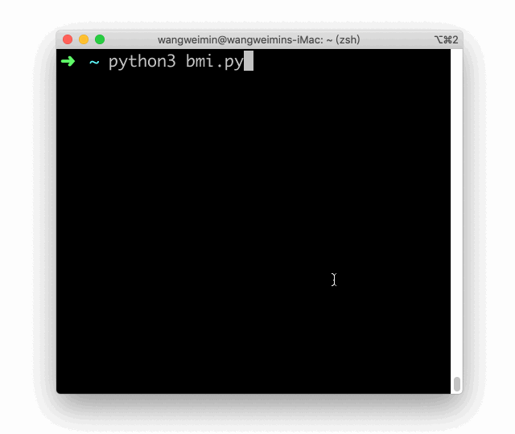
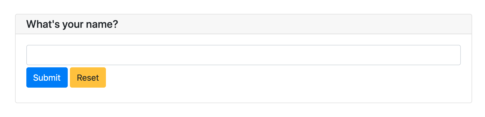
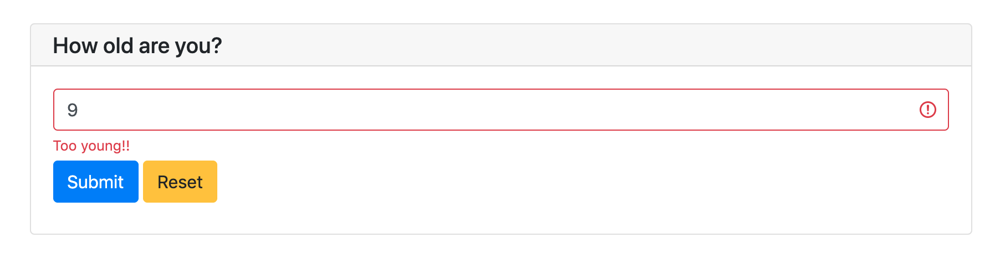
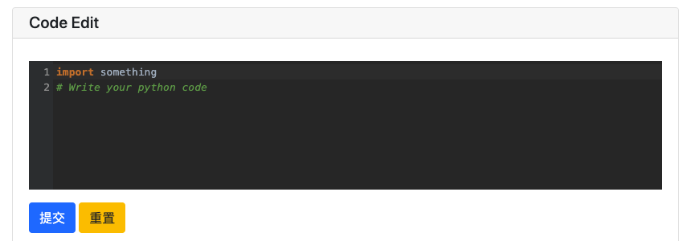
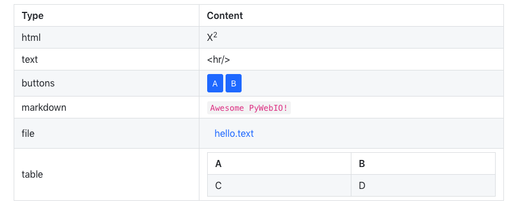
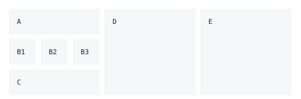

PyWebIO¶
PyWebIO提供了一系列命令式的交互函数来在浏览器上获取用户输入和进行输出，将浏览器变成了一个“富文本终端”，可以用于构建简单的Web应用或基于浏览器的GUI应用。 使用PyWebIO，开发者能像编写终端脚本一样(基于input和print进行交互)来编写应用，无需具备HTML和JS的相关知识； PyWebIO还可以方便地整合进现有的Web服务。非常适合快速构建对UI要求不高的应用。
特性¶
使用同步而不是基于回调的方式获取输入，代码编写逻辑更自然
非声明式布局，布局方式简单高效
代码侵入性小，旧脚本代码仅需修改输入输出逻辑便可改造为Web服务
支持整合到现有的Web服务，目前支持与Flask、Django、Tornado、aiohttp、 FastAPI(Starlette)框架集成
同时支持基于线程的执行模型和基于协程的执行模型
支持结合第三方库实现数据可视化
Installation¶
稳定版:
pip3 install -U pywebio
开发版:
pip3 install -U https://code.aliyun.com/wang0618/pywebio/repository/archive.zip
系统要求: PyWebIO要求 Python 版本在 3.5.2 及以上
Hello, world¶
这是一个使用PyWebIO计算 BMI指数 的脚本:
from pywebio.input import input, FLOAT
from pywebio.output import put_text
def bmi():
height = input("请输入你的身高(cm)：", type=FLOAT)
weight = input("请输入你的体重(kg)：", type=FLOAT)
BMI = weight / (height / 100) ** 2
top_status = [(14.9, '极瘦'), (18.4, '偏瘦'),
(22.9, '正常'), (27.5, '过重'),
(40.0, '肥胖'), (float('inf'), '非常肥胖')]
for top, status in top_status:
if BMI <= top:
put_text('你的 BMI 值: %.1f，身体状态：%s' % (BMI, status))
break
if __name__ == '__main__':
bmi()
如果没有使用PyWebIO，这只是一个非常简单的脚本，而通过使用PyWebIO提供的输入输出函数，你可以在浏览器中与代码进行交互：
{kind=link}
将上面代码最后一行对 bmi() 的直接调用改为使用 pywebio.start_server(bmi, port=80) 便可以在80端口提供 bmi() 服务( 在线Demo )。
将 bmi() 服务整合到现有的Web框架请参考 与Web框架集成 。
Documentation¶
这个文档同时也提供 PDF 和 Epub 格式.
User’s guide¶
如果你接触过Web开发，你可能对接下来描述的PyWebIO的用法感到不太习惯，不同于传统Web开发的后端实现接口、前端进行展示交互的模式，在PyWebIO中，所有的逻辑都通过编写Python代码实现。
你可以按照编写控制台程序的逻辑编写PyWebIO应用，只不过这里的终端变成了浏览器。通过PyWebIO提供的命令式API，你可以简单地调用 put_text() 、 put_image() 、 put_table() 等函数输出文本、图片、表格等内容到浏览器，也可以调用 input() 、 select() 、 file_upload() 等函数在浏览器上显示不同表单来接收用户的输入。此外PyWebIO中还提供了点击事件、布局等支持，让你可以使用最少的代码完成与用户的交互，并尽可能提供良好的用户体验。
本篇使用指南从几个方面对PyWebIO的使用进行介绍，覆盖了PyWebIO的绝大部分特性。本文档中大部分示例代码的右上方都有一个Demo链接，点击后可以在线预览代码的运行效果。
输入¶
输入函数都定义在 pywebio.input 模块中，可以使用 from pywebio.input import * 引入。
调用输入函数会在浏览器上弹出一个输入表单来获取输入。PyWebIO的输入函数是阻塞式的（和Python内置的 input 一样），在表单被成功提交之前，输入函数不会返回。
基本输入¶
首先是一些基本类型的输入。
文本输入:
age = input("How old are you?", type=NUMBER)
这样一行代码的效果为：浏览器会弹出一个文本输入框来获取输入，在用户完成输入将表单提交后，函数返回用户输入的值。
下面是一些其他类型的输入函数:
# Password input
password = input("Input password", type=PASSWORD)
# Drop-down selection
gift = select('Which gift you want?', ['keyboard', 'ipad'])
# Checkbox
agree = checkbox("User Term", options=['I agree to terms and conditions'])
# Single choice
answer = radio("Choose one", options=['A', 'B', 'C', 'D'])
# Multi-line text input
text = textarea('Text Area', rows=3, placeholder='Some text')
# File Upload
img = file_upload("Select a image:", accept="image/*")
输入选项¶
输入函数可指定的参数非常丰富（全部参数及含义请见 函数文档 ）:
input('This is label', type=TEXT, placeholder='This is placeholder',
help_text='This is help text', required=True)
以上代码将在浏览器上显示如下：
我们可以为输入指定校验函数，校验函数应在校验通过时返回None，否则返回错误消息:
def check_age(p): # return None when the check passes, otherwise return the error message
if p < 10:
return 'Too young!!'
if p > 60:
return 'Too old!!'
age = input("How old are you?", type=NUMBER, validate=check_age)
当用户输入了不合法的值时，页面上的显示如下:
pywebio.input.textarea() 中可以使用 code 参数来开启代码风格的编辑区。
code = textarea('Code Edit', code={
'mode': "python",
'theme': 'darcula',
}, value='import something\n# Write your python code')
以上代码将在浏览器上显示如下：
输入组¶
PyWebIO支持输入组, 返回结果为一个字典。pywebio.input.input_group() 接受单项输入组成的列表作为参数, 返回以单项输入中的 name 作为键、以输入数据为值的字典:
data = input_group("Basic info",[
input('Input your name', name='name'),
input('Input your age', name='age', type=NUMBER, validate=check_age)
])
put_text(data['name'], data['age'])
输入组中同样支持使用 validate 参数设置校验函数，其接受整个表单数据作为参数:
def check_form(data): # return (input name, error msg) when validation fail
if len(data['name']) > 6:
return ('name', 'Name too long!')
if data['age'] <= 0:
return ('age', 'Age can not be negative!')
注意
PyWebIO 根据是否在输入函数中传入 name 参数来判断输入函数是在 input_group() 中还是被单独调用。所以当单独调用一个输入函数时, 不要 设置 name 参数；而在 input_group() 中调用输入函数时，需 务必提供 name 参数。
输出¶
输出函数都定义在 pywebio.output 模块中，可以使用 from pywebio.output import * 引入。
调用输出函数后，内容会实时输出到浏览器，在应用的生命周期内，可以在任意时刻调用输出函数。
基本输出¶
PyWebIO提供了一系列函数来输出文本、表格、图像等格式:
# Text Output
put_text("Hello world!")
# Table Output
put_table([
['Commodity', 'Price'],
['Apple', '5.5'],
['Banana', '7'],
])
# Image Output
put_image(open('/path/to/some/image.png', 'rb').read()) # local image
put_image('http://example.com/some-image.png') # internet image
# Markdown Output
put_markdown('~~Strikethrough~~')
# File Output
put_file('hello_word.txt', b'hello word!')
# Show a PopUp
popup('popup title', 'popup text content')
# Show a notification message
toast('New message 🔔')
PyWebIO提供的全部输出函数见 pywebio.output 模块。另外，PyWebIO还支持一些第三方库来进行数据可视化，参见 第三方库生态 。
注解
如果你在Python shell, IPython 或 jupyter notebook这种交互式执行环境中使用PyWebIO，你需要显式调用 show() 方法来显示输出:
>>> put_text("Hello world!").show()
>>> put_table([
... ['A', 'B'],
... [put_markdown(...), put_text('C')]
... ]).show()
组合输出¶
函数名以 put_ 开始的输出函数，可以与一些输出函数组合使用，作为最终输出的一部分：
put_table() 支持以 put_xxx() 调用作为单元格内容:
put_table([
['Type', 'Content'],
['html', put_html('X<sup>2</sup>')],
['text', '<hr/>'], # equal to ['text', put_text('<hr/>')]
['buttons', put_buttons(['A', 'B'], onclick=...)],
['markdown', put_markdown('`Awesome PyWebIO!`')],
['file', put_file('hello.text', b'hello world')],
['table', put_table([['A', 'B'], ['C', 'D']])]
])
以上代码将在浏览器上显示如下：
类似地， popup() 也可以将 put_xxx() 调用作为弹窗内容:
popup('Popup title', [
put_html('<h3>Popup Content</h3>'),
'plain html: <br/>', # Equivalent to: put_text('plain html: <br/>')
put_table([['A', 'B'], ['C', 'D']]),
put_button('close_popup()', onclick=close_popup)
])
另外，你可以使用 put_widget() 来创建可以接受 put_xxx() 的自定义输出控件。
接受 put_xxx() 调用作为参数的完整输出函数清单请见 输出函数列表
上下文管理器
一些接受 put_xxx() 调用作为参数的输出函数支持作为上下文管理器来使用：
with put_collapse('This is title'):
for i in range(4):
put_text(i)
put_table([
['Commodity', 'Price'],
['Apple', '5.5'],
['Banana', '7'],
])
支持上下文管理器的完整函数清单请见 输出函数列表
事件回调¶
从上面可以看出，PyWebIO把交互分成了输入和输出两部分：输入函数为阻塞式调用，会在用户浏览器上显示一个表单，在用户提交表单之前输入函数将不会返回；输出函数将内容实时输出至浏览器。这种交互方式和控制台程序是一致的，因此PyWebIO应用非常适合使用控制台程序的编写逻辑来进行开发。
此外，PyWebIO还支持事件回调：PyWebIO允许你输出一些控件并绑定回调函数，当控件被点击时相应的回调函数便会被执行。
下面是一个例子:
from functools import partial
def edit_row(choice, row):
put_text("You click %s button ar row %s" % (choice, row))
put_table([
['Idx', 'Actions'],
[1, put_buttons(['edit', 'delete'], onclick=partial(edit_row, row=1))],
[2, put_buttons(['edit', 'delete'], onclick=partial(edit_row, row=2))],
[3, put_buttons(['edit', 'delete'], onclick=partial(edit_row, row=3))],
])
put_table() 的调用不会阻塞。当用户点击了某行中的按钮时，PyWebIO会自动调用相应的回调函数:
当然，PyWebIO还支持单独的按钮控件:
def btn_click(btn_val):
put_text("You click %s button" % btn_val)
put_buttons(['A', 'B', 'C'], onclick=btn_click) # a group of buttons
put_button("Click me", onclick=lambda: toast("Clicked")) # single button
事实上，不仅是按钮，所有的输出都可以绑定点击事件。你可以在输出函数之后调用 onclick() 方法来绑定点击事件:
put_image('some-image.png').onclick(lambda: toast('You click an image'))
# set onclick in combined output
put_table([
['Commodity', 'Price'],
['Apple', put_text('5.5').onclick(lambda: toast('You click the text'))],
])
onclick() 方法的返回值为对象本身，所以可以继续用于组合输出中。
输出域Scope¶
PyWebIO使用scope模型来控制内容输出的位置。scope为输出内容的容器，你可以创建一个scope并将内容输出到其中。
每个输出函数（函数名形如 put_xxx() ）都会将内容输出到一个Scope，默认为”当前Scope”，”当前Scope”由 use_scope() 设置。
use_scope()
可以使用 use_scope() 开启并进入一个新的输出域，或进入一个已经存在的输出域:
with use_scope('scope1'): # 创建并进入scope 'scope1'
put_text('text1 in scope1') # 输出内容到 scope1
put_text('text in parent scope of scope1') # 输出内容到 ROOT scope
with use_scope('scope1'): # 进入之前创建的scope 'scope1'
put_text('text2 in scope1') # 输出内容到 scope1
以上代码将会输出:
text1 in scope1
text2 in scope1
text in parent scope of scope1
use_scope() 还可以使用 clear 参数将scope中原有的内容清空:
with use_scope('scope2'):
put_text('create scope2')
put_text('text in parent scope of scope2')
with use_scope('scope2', clear=True): # enter the existing scope and clear the previous content
put_text('text in scope2')
以上代码将会输出:
text in scope2
text in parent scope of scope2
use_scope() 还可以作为装饰器来使用:
from datetime import datetime
@use_scope('time', clear=True)
def show_time():
put_text(datetime.now())
第一次调用 show_time 时，将会创建 time 输出域并在其中输出当前时间，之后每次调用 show_time() ，输出域都会被新的内容覆盖。
Scope支持嵌套。会话开始时，PyWebIO应用只有一个 ROOT scope。你可以在一个scope中创建新的scope。比如，以下代码将会创建3个scope:
with use_scope('A'):
put_text('Text in scope A')
with use_scope('B'):
put_text('Text in scope B')
with use_scope('C'):
put_text('Text in scope C')
以上代码将会产生如下Scope布局:
┌─ROOT────────────────────┐
│ │
│ ┌─A───────────────────┐ │
│ │ Text in scope A │ │
│ │ ┌─B───────────────┐ │ │
│ │ │ Text in scope B │ │ │
│ │ └─────────────────┘ │ │
│ └─────────────────────┘ │
│ │
│ ┌─C───────────────────┐ │
│ │ Text in scope C │ │
│ └─────────────────────┘ │
└─────────────────────────┘
put_scope()
我们已经知道scope实际上是输出内容的容器，那么我们能否将scope作为输出的子元素呢（比如将scope作为表格的一个cell），答案是肯定的。你可以使用 put_scope() 来显式创建一个scope，而从它以 put_ 开头的函数名可以看出，它也可以被传递到任何可以接受 put_xxx() 调用的地方。
put_table([
['Name', 'Hobbies'],
['Tom', put_scope('hobby', content=put_text('Coding'))] # hobby is initialized to coding
])
with use_scope('hobby', clear=True):
put_text('Movie') # hobby is reset to Movie
# append Music, Drama to hobby
with use_scope('hobby'):
put_text('Music')
put_text('Drama')
# insert the Coding into the top of the hobby
put_markdown('**Coding**', scope='hobby', position=0)
警告
It is not allowed to have two scopes with the same name in the application.
输出域控制函数
除了 use_scope() 和 put_scope() , PyWebIO还提供了以下scope控制函数：
clear(scope): 清除scope的内容remove(scope): 移除scopescroll_to(scope): 将页面滚动到scope处
另外，所有的输出函数还支持使用 scope 参数来指定输出的目的scope，也可使用 position 参数来指定在目标scope中输出的位置。更多信息参见 output 模块 。
布局¶
通常，使用上述输出函数足以完成大部分输出，但是这些输出之间全都是竖直排列的。如果想创建更复杂的布局，需要使用布局函数。
pywebio.output 模块提供了3个布局函数，通过对他们进行组合可以完成各种复杂的布局:
put_row(): 使用行布局输出内容. 内容在水平方向上排列put_column(): 使用列布局输出内容. 内容在竖直方向上排列put_grid(): 使用网格布局输出内容
通过组合 put_row() 和 put_column() 可以实现灵活布局:
put_row([
put_column([
put_code('A'),
put_row([
put_code('B1'), None, # None represents the space between the output
put_code('B2'), None,
put_code('B3'),
]),
put_code('C'),
]), None,
put_code('D'), None,
put_code('E')
])
以上代码将在浏览器上显示如下：
布局函数还支持自定义各部分的尺寸:
put_row([put_image(…), put_image(…)], size='40% 60%') # 左右两图宽度比2:3
更多布局函数的用法及代码示例请查阅 布局函数文档 .
样式¶
如果你熟悉 CSS样式 ，你还可以在输出函数后调用 style() 方法给输出设定自定义样式。
可以给单个的 put_xxx() 输出设定CSS样式，也可以配合组合输出使用:
put_text('hello').style('color: red; font-size: 20px')
# in combined output
put_row([
put_text('hello').style('color: red'),
put_markdown('markdown')
]).style('margin-top: 20px')
style() 方法的返回值为对象本身，所以可以继续用于组合输出中。
Run application¶
在PyWebIO中，有两种方式用来运行PyWebIO应用：作为脚本运行和使用 pywebio.start_server() 或 pywebio.platform.path_deploy() 来作为Web服务运行。
Overview¶
Server模式
在Server模式下，PyWebIO会启动一个Web服务来持续性地提供服务。当用户访问服务地址时，PyWebIO会开启一个新会话并运行PyWebIO应用。
将PyWebIO应用部署为web服务的最常用方式是使用 start_server()
from pywebio import *
def main(): # PyWebIO application function
name = input.input("what's your name")
output.put_text("hello", name)
start_server(main, port=8080, debug=True)
现在，在 http://127.0.0.1:8080/ 页面就会看到欢迎页面了。
使用 debug=True 来开启debug模式，这时server会在检测到代码发生更改后进行重启。
start_server() 提供了对远程访问的支持，当开启远程访问后（通过在 start_server() 中传入 remote_access=True 开启 ），你将会得到一个用于访问当前应用的临时的公网访问地址，其他任何人都可以使用此地址访问你的应用。远程接入可以很方便地将应用临时分享给其他人。
将PyWebIO应用部署为web服务的另一种方式是使用 path_deploy() 。path_deploy() 可以从一个目录中部署PyWebIO应用，只需要在该目录下的python文件中定义PyWebIO应用，就可以通过URL中的路径来访问这些应用了。
注意
注意，在Server模式下， pywebio.input 、 pywebio.output 和 pywebio.session 模块内的函数仅能在任务函数上下文中进行调用。比如如下调用是 不被允许的
import pywebio
from pywebio.input import input
port = input('Input port number:') # ❌ error
pywebio.start_server(my_task_func, port=int(port))
Script模式
如果你在代码中没有调用 start_server() 或 path_deploy() 函数，那么你就是以脚本模式在运行PyWebIO应用。
在脚本模式中，当首次运行到对PyWebIO交互函数的调用时，会自动打开浏览器的一个页面，后续的PyWebIO交互都会在这个页面上进行。当脚本运行结束，这个页面也将不再有效。
如果用户在脚本结束运行之前关闭了浏览器，那么之后会话内对于PyWebIO交互函数的调用将会引发一个 SessionException 异常。
并发¶
PyWebIO 支持在多线程环境中使用。
Script模式
在 Script模式下，你可以自由地启动线程，并在其中调用PyWebIO的交互函数。当所有非 Daemon线程 运行结束后，脚本退出。
Server模式
Server模式下，如果需要在新创建的线程中使用PyWebIO的交互函数，需要手动调用 register_thread(thread) 对新进程进行注册（这样PyWebIO才能知道新创建的线程属于哪个会话）。如果新创建的线程中没有使用到PyWebIO的交互函数，则无需注册。没有使用 register_thread(thread) 注册的线程不受会话管理，其调用PyWebIO的交互函数将会产生 SessionNotFoundException 异常。
Server模式下多线程的使用示例:
def show_time():
while True:
with use_scope(name='time', clear=True):
put_text(datetime.datetime.now())
time.sleep(1)
def app():
t = threading.Thread(target=show_time)
register_thread(t)
put_markdown('## Clock')
t.start() # run `show_time()` in background
# ❌ this thread will cause `SessionNotFoundException`
threading.Thread(target=show_time).start()
put_text('Background task started.')
start_server(app, port=8080, debug=True)
会话的结束¶
当用户关闭浏览器页面时，与之相应的会话也将被关闭。会话关闭后，应用中未返回的PyWebIO输入函数的调用将会抛出 SessionClosedException 异常，后续对PyWebIO交互函数的调用将会引发 SessionNotFoundException 或 SessionClosedException 异常。
大部分情况下，你不需要捕获这些异常，让这些异常来终止代码的执行通常是比较合适的。
可以使用 pywebio.session.defer_call(func) 来设置会话结束时需要调用的函数。无论是因为用户主动关闭页面还是任务结束使得会话关闭，设置的函数都会被执行。defer_call(func) 可以用于资源清理等工作。在会话中可以多次调用 defer_call() ,会话结束后将会顺序执行设置的函数。
More about PyWebIO¶
目前为止，你已经了解了PyWebIO中最重要的特性，并且可以开始编写PyWebIO应用了。然而，有些功能前面我们并没有覆盖到，这里提供了对剩余特性的一些简短介绍，如果你在应用编写过程中需要用到这里的某个特性，你可以查阅对应的详细文档。
另外，你可以在 cookbook 页面找到一些对于编写PyWebIO应用很有帮助的代码片段。
pin 模块¶
你已经知道，PyWebIO的输入函数是阻塞式的，并且输入表单会在成功提交后消失。在某些时候，你可能想要输入表单一直显示并可以持续性接收用户输入，这时你可以使用 pywebio.pin 模块。
platform 模块¶
pywebio.platform 模块提供了将PyWebIO应用以多种方式部署的支持。
PyWebIO的服务端与浏览器可以通过两种协议(WebSocket 和 HTTP 协议)进行通信，默认使用WebSocket协议，如果你想使用HTTP协议，你可以选择本模块中的其他 start_server() 函数。
如果要为PyWebIO应用设置一些网页相关的配置，可以尝试使用 pywebio.config() 。
高级特性¶
可以将PyWebIO应用整合到现存的Python Web项目中，PyWebIO应用和web项目使用一个web框架。详细信息参见 Advanced Topic: Integration with Web Framework 。
PyWebIO还支持基于协程的会话。具体参见 Advanced Topic: Coroutine-based session 。
如果你想要将PyWebIO应用打包到一个单独的可执行文件里面，从而使用户可以在没有安装python解释器的情况下运行应用，你可以参考 Build stand-alone App
如果你想在PyWebIO应用中进行一些数据可视化，可以参考 Data visualization
pywebio.input — 输入模块¶
本模块提供了一系列函数来从浏览器接收用户不同的形式的输入
输入函数大致分为两类，一类是单项输入:
name = input("What's your name")
print("Your name is %s" % name)
另一类是使用 input_group 的输入组:
info = input_group("User info",[
input('Input your name', name='name'),
input('Input your age', name='age', type=NUMBER)
])
print(info['name'], info['age'])
输入组中需要在每一项输入函数中提供 name 参数来用于在结果中标识不同输入项.
注解
PyWebIO 根据是否在输入函数中传入 name 参数来判断输入函数是在 input_group 中还是被单独调用。所以当你想要单独调用一个输入函数时，请不要设置 name 参数；而在 input_group 中调用输入函数时，务必提供 name 参数。
输入默认可以为空，如果需要用户必须提供值，则需要在输入函数中传入 required=True (部分输入函数不支持 required 参数)
本模块中的输入函数都是阻塞式的，输入表单会在成功提交后销毁。如果你想让表单可以一直显示在页面上并可以持续性接收输入，你可以考虑使用 pin 模块。
函数清单¶
函数 |
简介 |
文本输入 |
|
多行文本输入 |
|
下拉选择框 |
|
勾选选项 |
|
单选选项 |
|
滑块输入 |
|
按钮选项 |
|
文件上传 |
|
输入组 |
|
更新输入项 |
函数文档¶
-
pywebio.input.input(label='', type='text', *, validate=None, name=None, value=None, action=None, onchange=None, placeholder=None, required=None, readonly=None, datalist=None, help_text=None, **other_html_attrs)[源代码]¶ 文本输入
- 参数
label (str) – 输入框标签
type (str) –
Input type. Currently, supported types are：
TEXT,NUMBER,FLOAT,PASSWORD,URL,DATE,TIME,COLOR,DATETIME_LOCAL其中
DATE,TIME类型在某些浏览器上不被支持，详情见 https://developer.mozilla.org/en-US/docs/Web/HTML/Element/input#Browser_compatibilityvalidate (callable) –
输入值校验函数。 如果提供，当用户输入完毕或提交表单后校验函数将被调用。
validate接收输入值作为参数，当输入值有效时，返回None，当输入值无效时，返回错误提示字符串. 比如:def check_age(age): if age>30: return 'Too old' elif age<10: return 'Too young' input('Input your age', type=NUMBER, validate=check_age)
name (str) – 输入框的名字。与
input_group配合使用，用于在输入组的结果中标识不同输入项。 在单个输入中，不可以设置该参数！value (str) – 输入框的初始值
action (tuple(label:str, callback:callable)) –
在输入框右侧显示一个按钮，用户可通过点击按钮为输入框设置值。
label为按钮的显示文本，callback为按钮点击的回调函数。回调函数需要接收一个
set_value位置参数，set_value是一个可调用对象，接受单参数调用和双参数调用。单参数调用时，签名为
set_value(value:str)，调用set_value即可将表单项的值设置为传入的value参数。双参数调用时，签名为
set_value(value:any, label:str)，其中：value参数为最终输入项的返回值，可以为任意Python对象，并不会传递给用户浏览器label参数用于显示在用户表单项上
使用双参数调用
set_value后，用户表单项会变为只读状态。双参数调用的使用场景为：表单项的值通过回调动态生成，同时希望用户表单显示的和实际提交的数据不同(例如表单项上可以显示更人性化的内容，而表单项的值则可以保存更方便被处理的对象)
使用示例
import time def set_now_ts(set_value): set_value(int(time.time())) ts = input('Timestamp', type=NUMBER, action=('Now', set_now_ts)) from datetime import date,timedelta def select_date(set_value): with popup('Select Date'): put_buttons(['Today'], onclick=[lambda: set_value(date.today(), 'Today')]) put_buttons(['Yesterday'], onclick=[lambda: set_value(date.today() - timedelta(days=1), 'Yesterday')]) d = input('Date', action=('Select', select_date), readonly=True) put_text(type(d), d)
Note: 当使用 基于协程的会话实现 时，回调函数
callback可以为协程函数.onchange (callable) –
A callback function which will be called when user change the value of this input field.
onchange回调函数接收一个参数——输入项改变后的值。onchange的典型用途是配合input_update()来在一个表单中实现相互依赖的输入。placeholder (str) – 输入框的提示内容。提示内容会在输入框未输入值时以浅色字体显示在输入框中
required (bool) – 当前输入是否为必填项，默认为
Falsereadonly (bool) – 输入框是否为只读
datalist (list) – 输入建议内容列表，在页面上的显示效果为下拉候选列表，用户可以忽略建议内容列表而输入其他内容。仅当输入类型
type为TEXT时可用help_text (str) – 输入框的帮助文本。帮助文本会以小号字体显示在输入框下方
other_html_attrs – 在输入框上附加的额外html属性。参考： https://developer.mozilla.org/zh-CN/docs/Web/HTML/Element/input#%E5%B1%9E%E6%80%A7
- 返回
用户输入的值
-
pywebio.input.textarea(label='', *, rows=6, code=None, maxlength=None, minlength=None, validate=None, name=None, value=None, onchange=None, placeholder=None, required=None, readonly=None, help_text=None, **other_html_attrs)[源代码]¶ 文本输入域（多行文本输入）
- 参数
rows (int) – 输入框的最多可显示的文本的行数，内容超出时会显示滚动条
maxlength (int) – 最大允许用户输入的字符长度 (Unicode) 。未指定表示无限长度
minlength (int) – 最少需要用户输入的字符长度(Unicode)
code (dict/bool) –
通过提供 Codemirror 参数让文本输入域具有代码编辑器样式:
res = textarea('Text area', code={ 'mode': "python", 'theme': 'darcula' })
可以直接使用
code={}或code=True开启代码编辑样式。代码编辑区支持使用Esc或F11切换全屏。这里 列举了一些常用的Codemirror选项
label, validate, name, value, onchange, placeholder, required, readonly, help_text, other_html_attrs (-) – 与
input输入函数的同名参数含义一致
- 返回
用户输入的文本
-
pywebio.input.select(label='', options=None, *, multiple=None, validate=None, name=None, value=None, onchange=None, required=None, help_text=None, **other_html_attrs)[源代码]¶ 下拉选择框
默认单选，可以通过设置
multiple参数来允许多选- 参数
options (list) –
可选项列表。列表项的可用形式有：
dict:
{ "label":(str) 选项标签, "value":(object) 选项值, "selected":(bool, optional) 是否默认选中, "disabled":(bool, optional) 是否禁止选中 }
tuple or list:
(label, value, [selected,] [disabled])单值: 此时label和value使用相同的值
注意:
options中的value可以为任意可JSON序列化对象若
multiple选项不为True则可选项列表最多仅能有一项的selected为True。
multiple (bool) – 是否可以多选. 默认单选
value (list or str) – 下拉选择框初始选中项的值。当
multiple=True时，value需为list，否则为单个选项的值。 你也可以通过设置options列表项中的selected字段来设置默认选中选项。 最终选中项为value参数和options中设置的并集。required (bool) – 是否至少选择一项，仅在
multiple=True时可用label, validate, name, onchange, help_text, other_html_attrs (-) – 与
input输入函数的同名参数含义一致
- 返回
如果
multiple=True时，返回用户选中的options中的值的列表；否则，返回用户选中的options中的值
-
pywebio.input.checkbox(label='', options=None, *, inline=None, validate=None, name=None, value=None, onchange=None, help_text=None, **other_html_attrs)[源代码]¶ 勾选选项。可以多选，也可以不选。
- 参数
- 返回
用户选中的 options 中的值的列表。当用户没有勾选任何选项时，返回空列表
-
pywebio.input.radio(label='', options=None, *, inline=None, validate=None, name=None, value=None, onchange=None, required=None, help_text=None, **other_html_attrs)[源代码]¶ 单选选项
- 参数
- 返回
用户选中的选项的值, 如果用户没有选任何值，返回
None
-
pywebio.input.actions(label='', buttons=None, name=None, help_text=None)[源代码]¶ 按钮选项
在表单上显示为一组按钮，用户点击按钮后依据按钮类型的不同有不同的表现。
- 参数
buttons (list) –
按钮列表。列表项的可用形式有：
dict:
{ "label":(str) 按钮标签, "value":(object) 按钮值, "type":(str, optional) 按钮类型, "disabled":(bool, optional) 是否禁止选择, "color":(str, optional) 按钮颜色 }
若
type='reset'/'cancel'或disabled=True可省略valuetuple or list:
(label, value, [type], [disabled])单值: 此时label和value使用相同的值
其中，
value可以为任意可JSON序列化的对象。type可选值为:'submit': 点击按钮后，立即将整个表单提交，最终表单中本项的值为被点击按钮的value值。'submit'为type的默认值'cancel': 取消输入。点击按钮后，立即将整个表单提交，表单值返回None'reset': 点击按钮后，将整个表单重置，输入项将变为初始状态。 注意：点击type=reset的按钮后，并不会提交表单，actions()调用也不会返回
按钮的
color值可以为：primary,secondary,success,danger,warning,info,light,dark.label, name, help_text (-) – 与
input输入函数的同名参数含义一致
- 返回
若用户点击点击
type=submit按钮进行表单提交，返回用户点击的按钮的值； 若用户点击type=cancel按钮或通过其它方式提交表单，则返回None
当
actions()作为input_group()中的最后一个输入项、并且含有type='submit'的按钮时，input_group()表单默认的提交按钮会被当前actions()替换actions() 的使用场景
实现简单的选择操作:
confirm = actions('Confirm to delete file?', ['confirm', 'cancel'], help_text='Unrecoverable after file deletion') if confirm=='confirm': ...
相比于其他输入项，使用
actions()用户只需要点击一次就可完成提交。替换默认的提交按钮:
info = input_group('Add user', [ input('username', type=TEXT, name='username', required=True), input('password', type=PASSWORD, name='password', required=True), actions('actions', [ {'label': 'Save', 'value': 'save'}, {'label': 'Save and add next', 'value': 'save_and_continue'}, {'label': 'Reset', 'type': 'reset', 'color': 'warning'}, {'label': 'Cancel', 'type': 'cancel', 'color': 'danger'}, ], name='action', help_text='actions'), ]) put_code('info = ' + json.dumps(info, indent=4)) if info is not None: save_user(info['username'], info['password']) if info['action'] == 'save_and_continue': add_next()
-
pywebio.input.file_upload(label='', accept=None, name=None, placeholder='Choose file', multiple=False, max_size=0, max_total_size=0, required=None, help_text=None, **other_html_attrs)[源代码]¶ 文件上传
- 参数
accept (str or list) –
单值或列表, 表示可接受的文件类型。文件类型的可用形式有：
以
.字符开始的文件扩展名（例如：.jpg, .png, .doc）。 注意：截至本文档编写之时，微信内置浏览器还不支持这种语法一个有效的 MIME 类型。 例如：
application/pdf、audio/*表示音频文件、video/*表示视频文件、image/*表示图片文件。 参考 https://developer.mozilla.org/en-US/docs/Web/HTTP/Basics_of_HTTP/MIME_types
placeholder (str) – 未上传文件时，文件上传框内显示的文本
multiple (bool) – 是否允许多文件上传，默认关闭
max_size (int/str) –
- 单个文件的最大大小，超过限制将会禁止上传。
默认为0，表示不限制上传文件的大小。
max_size值可以为数字表示的字节数，或以K/M/G结尾表示的字符串(分别表示 千字节、兆字节、吉字节，大小写不敏感)。例如:max_size=500,max_size='40K',max_size='3M'max_total_size (int/str) – 所有文件的最大大小，超过限制将会禁止上传。仅在
multiple=True时可用，默认不限制上传文件的大小。 格式同max_size参数required (bool) – 是否必须要上传文件。默认为
Falselabel, name, help_text, other_html_attrs (-) – 与
input输入函数的同名参数含义一致
- 返回
multiple=False时(默认)，返回dict:{ 'filename': 文件名， 'content'：文件二进制数据(bytes object), 'mime_type': 文件的MIME类型, 'last_modified': 文件上次修改时间(时间戳) }若用户没有上传文件，返回
None。multiple=True时，返回列表，列表项格式同上文multiple=False时的返回值；若用户没有上传文件，返回空列表。
注解
若上传大文件请留意Web框架的文件上传大小限制设置。在使用
start_server()或path_deploy()启动PyWebIO应用时， 可通过max_payload_size参数设置Web框架允许上传的最大文件大小# Upload a file and save to server f = input.file_upload("Upload a file") open('asset/'+f['filename'], 'wb').write(f['content']) imgs = file_upload("Select some pictures:", accept="image/*", multiple=True) for img in imgs: put_image(img['content'])
-
pywebio.input.slider(label='', *, name=None, value=0, min_value=0, max_value=100, step=1, validate=None, onchange=None, required=None, help_text=None, **other_html_attrs)[源代码]¶ 滑块输入
- 参数
value (int/float) – 滑块的初始值
min_value (int/float) – 滑块最小允许的值
max_value (int/float) – 滑块最大允许的值
step (int) – 滑动的步长。仅当
value、min_value和max_value全为int时有效label, name, validate, onchange, required, help_text, other_html_attrs (-) – 与
input输入函数的同名参数含义一致
- Return int/float
若
value,min_value和max_value中含有float类型，则返回值为float，否则返回值为int类型
-
pywebio.input.input_group(label='', inputs=None, validate=None, cancelable=False)[源代码]¶ 输入组。向页面上展示一组输入
- 参数
label (str) – 输入组标签
inputs (list) – 输入项列表。列表的内容为对单项输入函数的调用，并在单项输入函数中传入
name参数。validate (callable) –
输入组校验函数。
函数签名：
callback(data) -> (name, error_msg)validate接收整个表单的值为参数，当校验表单值有效时，返回None，当某项输入值无效时，返回出错输入项的name值和错误提示. 比如:
def check_form(data): if len(data['name']) > 6: return ('name', 'Name to long!') if data['age'] <= 0: return ('age', 'Age cannot be negative!') data = input_group("Basic info",[ input('Input your name', name='name'), input('Repeat your age', name='age', type=NUMBER) ], validate=check_form) put_text(data['name'], data['age'])
- 参数
cancelable (bool) –
表单是否可以取消。若
cancelable=True则会在表单底部显示一个“取消”按钮，默认为False。注意：若
inputs中最后一项输入为actions()，则忽略cancelable- 返回
若用户取消表单，返回
None,否则返回一个dict, 其键为输入项的name值，字典值为输入项的值
-
pywebio.input.input_update(name=None, **spec)[源代码]¶ 更新输入项的属性。本函数仅能在输入函数的
onchange回调中使用。- 参数
name (str) – 目标输入项的
name。可选，默认为当前触发onchange回调的输入项spec – 需要更新的输入项参数。注意一下参数无法被更新：
type,name,validate,action,code,onchange,multiple
一个具有依赖关系的输入项的示例：
country2city = { 'China': ['Beijing', 'Shanghai', 'Hong Kong'], 'USA': ['New York', 'Los Angeles', 'San Francisco'], } countries = list(country2city.keys()) location = input_group("Select a location", [ select('Country', options=countries, name='country', onchange=lambda c: input_update('city', options=country2city[c])), select('City', options=country2city[countries[0]], name='city'), ])
pywebio.output — 输出模块¶
本模块提供了一系列函数来输出不同形式的内容到用户浏览器，并支持灵活的输出控制。
函数清单¶
* 的函数表示其支持接收 put_xxx 调用作为参数。† 的函数表示其支持作为上下文管理器使用。函数 |
简介 |
|
输出域Scope |
创建一个新的scope. |
|
进入输出域 |
||
获取当前正在使用的输出域 |
||
清空scope内容 |
||
移除Scope |
||
将页面滚动到 scope Scope处 |
||
内容输出 |
输出文本 |
|
输出Markdown |
||
输出通知消息 |
||
输出Html |
||
输出链接 |
||
输出进度条 |
||
输出加载提示 |
||
输出代码块 |
||
输出表格 |
||
输出按钮，并绑定点击事件 |
||
输出图片 |
||
显示一个文件下载链接 |
||
输出横向标签栏Tabs |
||
输出可折叠的内容 |
||
固定高度内容输出区域
内容超出则显示滚动条
.
|
||
输出自定义的控件 |
||
其他交互 |
显示一条通知消息 |
|
|
显示弹窗 |
|
关闭正在显示的弹窗 |
||
布局与样式 |
|
使用行布局输出内容 |
使用列布局输出内容 |
||
使用网格布局输出内容 |
||
在 |
||
自定义输出内容的css样式 |
输出域Scope¶
-
pywebio.output.put_scope(name, content=[], scope=None, position=- 1) → pywebio.io_ctrl.Output[源代码]¶ 输出一个输出域
- 参数
name (str) –
content (list/put_xxx()) – 输出域里的初始内容，可以为
put_xxx()调用或其列表。scope, position (int) – 与
put_text函数的同名参数含义一致
-
pywebio.output.use_scope(name=None, clear=False)[源代码]¶ scope的上下文管理器和装饰器。用于创建一个新的输出域并进入，或进入一个已经存在的输出域。
- 参数
name (str) – scope名. 若为None则生成一个全局唯一的scope名.（以上下文管理器形式的调用时，上下文管理器会返回scope名）
clear (bool) – 在进入scope前是否要清除scope里的内容
- Usage
with use_scope(...) as scope_name: put_xxx() @use_scope(...) def app(): put_xxx()
内容输出¶
Scope related parameters of output function
输出函数默认将内容输出到“当前scope”，“当前scope”可由 use_scope() 设置。
另外，所有输入函数都支持使用 scope 参数来指定输出的目的scope:
with use_scope('scope3'):
put_text('text1 in scope3') # output to current scope: scope3
put_text('text in ROOT scope', scope='ROOT') # output to ROOT Scope
put_text('text2 in scope3', scope='scope3') # output to scope3
以上代码运行结果如下:
text1 in scope3
text2 in scope3
text in ROOT scope
一个scope可以包含多个输出项，输出函数的默认行为是将内容追加到目标scope中。可以使用输出函数的 position 参数来指定输出内容在目标scope中的插入位置。
一个Scope中各次输出的元素具有像数组一样的索引，最前面的编号为0，以此往后递增加一；同样可以使用负数对Scope中的元素进行索引，-1表示最后面的元素，-2表示次后面的元素……
position 参数类型为整形， position>=0 时表示输出内容到目标Scope的第position号元素的前面； position<0 时表示输出内容到目标Scope第position号元素之后:
with use_scope('scope1'):
put_text('A')
put_text('B', position=0) # insert B before A -> B A
put_text('C', position=-2) # insert C after B -> B C A
put_text('D', position=1) # insert D before C B -> B D C A
Output functions
-
pywebio.output.put_text(*texts, sep=' ', inline=False, scope=None, position=- 1) → pywebio.io_ctrl.Output[源代码]¶ 输出文本
- 参数
texts – 要输出的内容。类型可以为任意对象，对非字符串对象会应用
str()函数作为输出值。sep (str) – 输出分隔符
inline (bool) – 将文本作为行内元素(连续输出的文本显示在相同的段落中)。默认每次输出的文本都作为一个独立的段落
scope (str) –
内容输出的目标scope，若scope不存在，则不进行任何输出操作。
可以直接指定目标Scope名，或者使用int通过索引Scope栈来确定Scope
position (int) – 在scope中输出的位置。
参数
scope和position的更多使用说明参见 用户手册
-
pywebio.output.put_markdown(mdcontent, lstrip=True, options=None, sanitize=True, scope=None, position=- 1, **kwargs) → pywebio.io_ctrl.Output[源代码]¶ 输出Markdown
- 参数
mdcontent (str) – Markdown文本
lstrip (bool) – 是否自动移除
mdcontent每一行的前导空白锁进options (dict) – 解析Markdown时的配置参数。 PyWebIO使用 marked 解析Markdown, 可配置项参见: https://marked.js.org/using_advanced#options (仅支持配置string和boolean类型的项)
sanitize (bool) – 是否使用 DOMPurify 对内容进行过滤来防止XSS攻击。
scope, position (int) – 与
put_text函数的同名参数含义一致
当使用python三引号语法在函数中输出多行Markdown内容时，你可以缩进Markdown内容来使代码保持美观。PyWebIO会智能地移除Markdown中的缩进:
# good code format def hello(): put_markdown(r""" # H1 This is content. """)
在 1.5 版更改: Enable
lstripby default. Deprecatestrip_indent.
-
pywebio.output.put_info(*contents, closable=False, scope=None, position=- 1) → Output:[源代码]¶ -
pywebio.output.put_success(*contents, closable=False, scope=None, position=- 1) → Output:[源代码]¶ -
pywebio.output.put_warning(*contents, closable=False, scope=None, position=- 1) → Output:[源代码]¶ -
pywebio.output.put_error(*contents, closable=False, scope=None, position=- 1) → Output:[源代码]¶ 输出通知消息
- 参数
contents – 消息内容. 元素为
put_xxx()调用，其他类型会被转换成put_text(content)closable (bool) – 是否在消息框右侧展示一个关闭按钮。
scope, position (int) – 与
put_text函数的同名参数含义一致
1.2 新版功能.
-
pywebio.output.put_html(html, sanitize=False, scope=None, position=- 1) → pywebio.io_ctrl.Output[源代码]¶ 输出Html内容
-
pywebio.output.put_link(name, url=None, app=None, new_window=False, scope=None, position=- 1) → pywebio.io_ctrl.Output[源代码]¶ 输出链接到其他网页或PyWebIO App的超链接
- 参数
url和app参数必须指定一个但不可以同时指定
-
pywebio.output.put_processbar(name, init=0, label=None, auto_close=False, scope=None, position=- 1) → pywebio.io_ctrl.Output[源代码]¶ 输出进度条
- 参数
name (str) – 进度条名称，为进度条的唯一标识
init (float) – 进度条初始值. 进度条的值在 0 ~ 1 之间
label (str) – 进度条显示的标签. 默认为当前进度的百分比
auto_close (bool) – 是否在进度完成后关闭进度条
scope, position (int) – 与
put_text函数的同名参数含义一致
Example:
import time put_processbar('bar'); for i in range(1, 11): set_processbar('bar', i / 10) time.sleep(0.1)
参见
使用
set_processbar()设置进度条进度
-
pywebio.output.set_processbar(name, value, label=None)[源代码]¶ 设置进度条进度
- 参数
name (str) – 设置进度条进度
value (float) – 进度条的值. 范围在 0 ~ 1 之间
label (str) – 进度条显示的标签. 默认为当前进度的百分比
-
pywebio.output.put_loading(shape='border', color='dark', scope=None, position=- 1) → pywebio.io_ctrl.Output[源代码]¶ 输出加载提示
- 参数
shape (str) – 加载提示的形状, 可选值:
'border'(默认，旋转的圆环)、'grow'(大小渐变的圆点)color (str) – 加载提示的颜色, 可选值:
'primary'、'secondary'、'success'、'danger'、'warning'、'info'、'light'、'dark'(默认)scope, position (int) – 与
put_text函数的同名参数含义一致
put_loading()支持直接调用和上下文管理器：for shape in ('border', 'grow'): for color in ('primary', 'secondary', 'success', 'danger', 'warning', 'info', 'light', 'dark'): put_text(shape, color) put_loading(shape=shape, color=color) # Use as context manager, the loading prompt will disappear automatically when the context block exits. with put_loading(): time.sleep(3) # Some time-consuming operations put_text("The answer of the universe is 42") # using style() to set the size of the loading prompt put_loading().style('width:4rem; height:4rem')
-
pywebio.output.put_code(content, language='', rows=None, scope=None, position=- 1) → pywebio.io_ctrl.Output[源代码]¶ 输出代码块
- 参数
content (str) – 代码内容
language (str) – 代码语言
rows (int) – 代码块最多可显示的文本行数，默认不限制。内容超出时会使用滚动条。
scope, position (int) – 与
put_text函数的同名参数含义一致
-
pywebio.output.put_table(tdata, header=None, scope=None, position=- 1) → pywebio.io_ctrl.Output[源代码]¶ 输出表格
- 参数
tdata (list) – 表格数据。列表项可以为
list或者dict, 单元格的内容可以为字符串或put_xxx类型的输出函数。 数组项可以使用span()函数来设定单元格跨度。header (list) –
表头。当
tdata的列表项为list类型时，若省略header参数，则使用tdata的第一项作为表头。表头项可以使用span()函数来设定单元格跨度。当
tdata为字典列表时，使用header指定表头顺序，不可省略。此时，header格式可以为 <字典键>列表 或者(<显示文本>, <字典键>)列表。scope, position (int) – 与
put_text函数的同名参数含义一致
Example:
# 'Name' cell across 2 rows, 'Address' cell across 2 columns put_table([ [span('Name',row=2), span('Address', col=2)], ['City', 'Country'], ['Wang', 'Beijing', 'China'], ['Liu', 'New York', 'America'], ]) # Use `put_xxx()` in `put_table()` put_table([ ['Type', 'Content'], ['html', put_html('X<sup>2</sup>')], ['text', '<hr/>'], ['buttons', put_buttons(['A', 'B'], onclick=...)], ['markdown', put_markdown('`Awesome PyWebIO!`')], ['file', put_file('hello.text', b'hello world')], ['table', put_table([['A', 'B'], ['C', 'D']])] ]) # Set table header put_table([ ['Wang', 'M', 'China'], ['Liu', 'W', 'America'], ], header=['Name', 'Gender', 'Address']) # When ``tdata`` is list of dict put_table([ {"Course":"OS", "Score": "80"}, {"Course":"DB", "Score": "93"}, ], header=["Course", "Score"]) # or header=[(put_markdown("*Course*"), "Course"), (put_markdown("*Score*") ,"Score")]
0.3 新版功能: 单元格的内容支持
put_xxx类型的输出函数
-
pywebio.output.span(content, row=1, col=1)[源代码]¶ 用于在
put_table()和put_grid()中设置内容跨单元格- 参数
content – 单元格内容。可以为字符串或
put_xxx()调用。row (int) – 竖直方向跨度, 即：跨行的数目
col (int) – 水平方向跨度, 即：跨列的数目
- Example
put_table([ ['C'], [span('E', col=2)], # 'E' across 2 columns ], header=[span('A', row=2), 'B']) # 'A' across 2 rows put_grid([ [put_text('A'), put_text('B')], [span(put_text('A'), col=2)], # 'A' across 2 columns ])
输出一组按钮，并绑定点击事件
- 参数
buttons (list) –
按钮列表。列表项的可用形式有：
dict:
{ "label":(str) 按钮标签,, "value":(str) 按钮值, "color":(str, optional) 按钮颜色, "disabled":(bool, optional) 按钮时否被禁用 }
tuple or list:
(label, value)单值: 此时label和value使用相同的值
其中，
value可以为任意对象。使用dict类型的列表项时，支持使用colorkey设置按钮颜色，可选值为primary、secondary、success、danger、warning、info、light、dark.Example:
put_buttons([dict(label='success', value='s', color='success')], onclick=...)
onclick (callable / list) –
按钮点击回调函数.
onclick可以是函数或者函数组成的列表.onclick为函数时， 签名为onclick(btn_value).btn_value为被点击的按钮的value值onclick为列表时，列表内函数的签名为func(). 此时，回调函数与buttons一一对应Tip: 可以使用
functools.partial来在onclick中保存更多上下文信息.Note: 当使用 基于协程的会话实现 时，回调函数可以为协程函数.
small (bool) – 是否使用小号按钮，默认为False
link_style (bool) – 是否将按钮显示为链接样式，默认为False
outline (bool) – 是否将按钮显示为镂空样式，默认为False
group (bool) – 是否将按钮合并在一起，默认为False
scope, position (int) – 与
put_text函数的同名参数含义一致callback_options –
回调函数的其他参数。根据选用的 session 实现有不同参数
- CoroutineBasedSession 实现
mutex_mode: 互斥模式。默认为
False。若为True，则在运行回调函数过程中，无法响应当前按钮组的新点击事件，仅当onclick为协程函数时有效
- ThreadBasedSession 实现
serial_mode: 串行模式模式。默认为
False，此时每次触发回调，回调函数会在新线程中立即执行。
开启serial_mode后，该按钮的回调会在会话内的一个固定线程内串行执行，且其他所有新的点击事件的回调(包括
serial_mode=False的回调)都将排队等待当前点击事件运行完成。如果回调函数运行时间很短，可以开启serial_mode来提高性能。
Example:
from functools import partial def row_action(choice, id): put_text("You click %s button with id: %s" % (choice, id)) put_buttons(['edit', 'delete'], onclick=partial(row_action, id=1)) def edit(): put_text("You click edit button") def delete(): put_text("You click delete button") put_buttons(['edit', 'delete'], onclick=[edit, delete])
在 1.5 版更改: Add
disabledbutton support. Thevalueof button can be any object.
输出一个按钮，并绑定点击事件
- 参数
label (str) – Button label
onclick (callable) – 按钮点击回调函数
color (str) – 按钮颜色。可选值为
primary、secondary、success、danger、warning、info、light、dark.disabled (bool) – Whether the button is disabled
small, link_style, outline, scope, position (-) – 与
put_buttons()函数的同名参数含义一致
Example:
put_button("click me", onclick=lambda: toast("Clicked"), color='success', outline=True)
1.4 新版功能.
在 1.5 版更改: add
disabledparameter
-
pywebio.output.put_image(src, format=None, title='', width=None, height=None, scope=None, position=- 1) → pywebio.io_ctrl.Output[源代码]¶ 输出图片
- 参数
src – 图片内容. 可以为: 字符串类型的URL, bytes-like object 表示的图片二进制内容,
PIL.Image.Image实例title (str) – 图片描述
width (str) – 图像的宽度，可以是CSS像素(数字px)或者百分比(数字%)。
height (str) – 图像的高度，可以是CSS像素(数字px)或者百分比(数字%)。可以只指定 width 和 height 中的一个值，浏览器会根据原始图像进行缩放。
format (str) – 图片格式，非必须。如
png,jpeg,gif等, 仅在src为非URL时有效scope, position (int) – 与
put_text函数的同名参数含义一致
Example:
img = open('/path/to/some/image.png', 'rb').read() put_image(img, width='50px') put_image('https://www.python.org/static/img/python-logo.png')
-
pywebio.output.put_file(name, content, label=None, scope=None, position=- 1) → pywebio.io_ctrl.Output[源代码]¶ 显示一个文件下载链接
在浏览器上的显示为一个以文件名为名的链接，点击链接后浏览器自动下载文件。
- 参数
name (str) – 下载保存为的文件名
content – 文件内容. 类型为 bytes-like object
label (str) – 下载链接的显示文本，默认和文件名相同
scope, position (int) – 与
put_text函数的同名参数含义一致
Example:
content = open('./some-file', 'rb').read() put_file('hello-world.txt', content, 'download me')
-
pywebio.output.put_tabs(tabs, scope=None, position=- 1) → pywebio.io_ctrl.Output[源代码]¶ 输出横向标签栏Tabs
- 参数
tabs (list) – 标签列表，列表项为一个 dict:
{"title": "Title", "content": ...}，其中content表示标签内容，可以为字符串、put_xxx()调用或由它们组成的列表。scope, position (int) – 与
put_text函数的同名参数含义一致
put_tabs([ {'title': 'Text', 'content': 'Hello world'}, {'title': 'Markdown', 'content': put_markdown('~~Strikethrough~~')}, {'title': 'More content', 'content': [ put_table([ ['Commodity', 'Price'], ['Apple', '5.5'], ['Banana', '7'], ]), put_link('pywebio', 'https://github.com/wang0618/PyWebIO') ]}, ])
1.3 新版功能.
-
pywebio.output.put_collapse(title, content=[], open=False, scope=None, position=- 1) → pywebio.io_ctrl.Output[源代码]¶ 输出可折叠的内容
- 参数
title (str) – 内容标题
content (list/str/put_xxx()) – 内容可以为字符串或
put_xxx类输出函数的返回值，或者由它们组成的列表。open (bool) – 是否默认展开折叠内容。默认不展开内容
scope, position (int) – 与
put_text函数的同名参数含义一致
Example:
put_collapse('Collapse title', [ 'text', put_markdown('~~Strikethrough~~'), put_table([ ['Commodity', 'Price'], ['Apple', '5.5'], ]) ], open=True) put_collapse('Large text', 'Awesome PyWebIO! '*30)
-
pywebio.output.put_scrollable(content=[], height=400, keep_bottom=False, border=True, scope=None, position=- 1, **kwargs) → pywebio.io_ctrl.Output[源代码]¶ 固定高度内容输出区域，内容超出则显示滚动条
- 参数
content (list/str/put_xxx()) – 内容可以为字符串或
put_xxx类输出函数的返回值，或者由它们组成的列表。height (int/tuple) – 区域的高度（像素），内容超出此高度则使用滚动条。可以传入
(min_height, max_height)来表示高度的范围，比如(100, 200)表示区域高度最小100像素、最高200像素。若不想限制高度，则传入Nonekeep_bottom (bool) – Whether to keep the content area scrolled to the bottom when updated.
border (bool) – 是否显示边框
scope, position (int) – 与
put_text函数的同名参数含义一致
Example:
import time put_scrollable(put_scope('scrollable'), height=200, keep_bottom=True) put_text("You can click the area to prevent auto scroll.", scope='scrollable') while 1: put_text(time.time(), scope='scrollable') time.sleep(0.5)
在 1.1 版更改: 添加
height参数，移除max_height参数；添加keep_bottom参数在 1.5 版更改: remove
horizon_scrollparameter
-
pywebio.output.put_widget(template, data, scope=None, position=- 1) → pywebio.io_ctrl.Output[源代码]¶ 输出自定义的控件
- 参数
template – html模版，使用 mustache.js 语法
data (dict) –
渲染模版使用的数据.
数据可以包含输出函数(
put_xxx())的返回值, 可以使用pywebio_output_parse函数来解析put_xxx()内容；对于字符串输入，pywebio_output_parse会将解析成文本.⚠️：使用
pywebio_output_parse函数时，需要关闭mustache的html转义:{{& pywebio_output_parse}}, 参见下文示例.scope, position (int) – 与
put_text函数的同名参数含义一致
- Example
tpl = ''' <details {{#open}}open{{/open}}> <summary>{{title}}</summary> {{#contents}} {{& pywebio_output_parse}} {{/contents}} </details> ''' put_widget(tpl, { "open": True, "title": 'More content', "contents": [ 'text', put_markdown('~~Strikethrough~~'), put_table([ ['Commodity', 'Price'], ['Apple', '5.5'], ['Banana', '7'], ]) ] })
其他交互¶
-
pywebio.output.toast(content, duration=2, position='center', color='info', onclick=None)[源代码]¶ 显示一条通知消息
- 参数
content (str) – 通知内容
duration (float) – 通知显示持续的时间，单位为秒。
0表示不自动关闭(此时消息旁会显示一个关闭图标，用户可以手动关闭消息)position (str) – 通知消息显示的位置，可以为
'left'/'center'/'right'color (str) – 通知消息的背景颜色，可以为
'info'/'error'/'warn'/'success'或以'#'开始的十六进制颜色值onclick (callable) –
点击通知消息时的回调函数，回调函数不接受任何参数。
Note: 当使用 基于协程的会话实现 时，回调函数可以为协程函数.
Example:
def show_msg(): put_text("You clicked the notification.") toast('New messages', position='right', color='#2188ff', duration=0, onclick=show_msg)
-
pywebio.output.popup(title, content=None, size='normal', implicit_close=True, closable=True)[源代码]¶ 显示弹窗
⚠️: PyWebIO不允许同时显示多个弹窗，在显示新弹窗前，会自动关闭页面上存在的弹窗。可以使用
close_popup()主动关闭弹窗- 参数
title (str) – 弹窗标题
content (list/str/put_xxx()) – 弹窗内容. 可以为字符串或
put_xxx类输出函数的返回值，或者为它们组成的列表。size (str) – 弹窗窗口大小，可选值:
'large','normal'and'small'.implicit_close (bool) – 是否可以通过点击弹窗外的内容或按下
Esc键来关闭弹窗，默认为Falseclosable (bool) – 是否可由用户关闭弹窗. 默认情况下，用户可以通过点击弹窗右上角的关闭按钮来关闭弹窗。 设置为
False时弹窗仅能通过popup_close()关闭，此时implicit_close参数将被忽略.
popup()支持直接传入内容、上下文管理器、装饰器三种形式的调用直接传入内容:
popup('popup title', 'popup text content', size=PopupSize.SMALL) popup('Popup title', [ put_html('<h3>Popup Content</h3>'), 'html: <br/>', put_table([['A', 'B'], ['C', 'D']]), put_buttons(['close_popup()'], onclick=lambda _: close_popup()) ])
作为上下文管理器使用:
with popup('Popup title') as s: put_html('<h3>Popup Content</h3>') put_text('html: <br/>') put_buttons([('clear()', s)], onclick=clear) put_text('Also work!', scope=s)
上下文管理器会开启一个新的输出scope并返回scope名。在上下文管理器中的输出内容默认会输出到popup窗口中。在上下文管理器退出后，popup窗口并不会随之关闭，你可以继续使用输出函数的
scope参数来输出内容到popup窗口内。作为装饰器使用:
@popup('Popup title') def show_popup(): put_html('<h3>Popup Content</h3>') put_text("I'm in a popup!") ... show_popup()
布局与样式¶
-
pywebio.output.put_row(content=[], size=None, scope=None, position=- 1) → pywebio.io_ctrl.Output[源代码]¶ 使用行布局输出内容. 内容在水平方向从左往右排列成一行
- 参数
content (list) – 子元素列表, 列表项为
put_xxx()调用或者None,None表示空白行间距size (str) –
用于指示子元素的宽度, 为空格分割的宽度值列表.宽度值需要和content中子元素一一对应(None子元素也要对应宽度值).size 默认给None元素分配10像素宽度，并为剩余元素平均分配宽度.宽度值可用格式:
像素值: 例如:
100px百分比: 表示占可用宽度的百分比. 例如:
33.33%fr关键字: 表示比例关系, 2fr 表示的宽度为 1fr 的两倍auto关键字: 表示由浏览器自己决定长度minmax(min, max): 产生一个长度范围，表示长度就在这个范围之中。它接受两个参数，分别为最小值和最大值。 例如:minmax(100px, 1fr)表示长度不小于100px，不大于1fr
scope, position (int) – 与
put_text函数的同名参数含义一致
- Example
# Two code blocks of equal width, separated by 10 pixels put_row([put_code('A'), None, put_code('B')]) # The width ratio of the left and right code blocks is 2:3, which is equivalent to size='2fr 10px 3fr' put_row([put_code('A'), None, put_code('B')], size='40% 10px 60%')
-
pywebio.output.put_column(content=[], size=None, scope=None, position=- 1) → pywebio.io_ctrl.Output[源代码]¶ 使用列布局输出内容. 内容在竖直方向从上往下排列成一列
-
pywebio.output.put_grid(content, cell_width='auto', cell_height='auto', cell_widths=None, cell_heights=None, direction='row', scope=None, position=- 1) → pywebio.io_ctrl.Output[源代码]¶ 使用网格布局输出内容
- 参数
content – 输出内容.
put_xxx()/ None 组成的二维数组, None 表示空白. 数组项可以使用span()函数设置元素在网格的跨度.cell_width (str) – 网格元素的宽度.
cell_height (str) – 网格元素的高度.
cell_widths (str) – 网格每一列的宽度. 宽度值用空格分隔. 不可以和
cell_width参数同时使用.cell_heights (str) – 网格每一行的高度. 高度值用空格分隔. 不可以和
cell_height参数同时使用.direction (str) –
排列方向. 为
'row'或'column'.'row'时表示，content中的每一个子数组代表网格的一行;'column'时表示，content中的每一个子数组代表网格的一列.scope, position (int) – 与
put_text函数的同名参数含义一致
cell_width,``cell_height``,``cell_widths``,``cell_heights`` 参数中的宽度/高度值格式参考put_row()函数的size参数注释.- Example
put_grid([ [put_text('A'), put_text('B'), put_text('C')], [None, span(put_text('D'), col=2, row=1)], [put_text('E'), put_text('F'), put_text('G')], ], cell_width='100px', cell_height='100px')
-
pywebio.output.style(outputs, css_style) → Union[pywebio.io_ctrl.Output, pywebio.io_ctrl.OutputList][源代码]¶ 自定义输出内容的css样式
1.3 版后已移除: 为输出设置样式的新方式参见 User Guide.
- 参数
outputs (list/put_xxx()) – 输出内容，可以为
put_xxx()调用或其列表。outputs为列表时将为每个列表项都添加自定义的css样式。css_style (str) – css样式字符串
- 返回
添加了css样式的输出内容
Note: 若
outputs为list，则outputs中每一项都会被添加css样式, 其返回值可用于任何接受put_xxx()列表的地方。- Example
style(put_text('Red'), 'color:red') style([ put_text('Red'), put_markdown('~~del~~') ], 'color:red') put_table([ ['A', 'B'], ['C', style(put_text('Red'), 'color:red')], ]) put_collapse('title', style([ put_text('text'), put_markdown('~~del~~'), ], 'margin-left:20px'))
pywebio.session — 会话相关¶
-
pywebio.session.download(name, content)[源代码]¶ 向用户推送文件，用户浏览器会将文件下载到本地
- 参数
name (str) – 下载保存为的文件名
content – 文件内容. 类型为 bytes-like object
Example:
put_button('Click to download', lambda: download('hello-world.txt', b'hello world!'))
-
pywebio.session.run_js(code_, **args)[源代码]¶ 在用户浏览器中运行JavaScript代码.
代码运行在浏览器的JS全局作用域中
- 参数
code (str) – js代码
args – 传递给js代码的局部变量。变量值需要可以被json序列化
Example:
run_js('console.log(a + b)', a=1, b=2)
-
pywebio.session.eval_js(expression_, **args)[源代码]¶ 在用户浏览器中执行JavaScript表达式，并获取表达式的值
- 参数
expression (str) – JavaScript表达式。表达式的值需要可以被JSON序列化。如果表达式的值是一个 promise ，
eval_js()会一直等待promise被resolve，然后返回它的值，若promise被reject，则返回None。args – 传递给js代码的局部变量。变量值需要可以被json序列化
- 返回
js表达式的值
注意⚠️：在 基于协程 的会话上下文中，需要使用
await eval_js(expression)语法来进行调用。Example:
current_url = eval_js("window.location.href") function_res = eval_js('''(function(){ var a = 1; a += b; return a; })()''', b=100) promise_res = eval_js('''new Promise(resolve => { setTimeout(() => { resolve('Returned inside callback.'); }, 2000); });''')
在 1.3 版更改: The JS expression support return promise.
-
pywebio.session.register_thread(thread: threading.Thread)[源代码]¶ 注册线程，以便在线程内调用 PyWebIO 交互函数。
仅能在默认的基于线程的会话上下文中调用。
- 参数
thread (threading.Thread) – 线程对象
-
pywebio.session.defer_call(func)[源代码]¶ 设置会话结束时调用的函数。
无论是用户主动关闭会话还是任务结束会话关闭，设置的函数都会被运行。
在会话中可以多次调用
defer_call(),会话结束后将会顺序执行设置的函数。defer_call同样支持以装饰器的方式使用:@defer_call def cleanup(): pass
注意
通过
defer_call()设置的函数被调用时会话已经关闭，所以在函数体内不可以调用 PyWebIO 的交互函数
-
pywebio.session.local¶ 当前会话的数据对象(session-local object)。
local是一个可以通过属性取值的字典，它的目标是用来存储应用中会话独立的状态。local中存储的内容不会在会话之间共享，每个会话只能访问到自己存储在其中的数据。- 使用场景
当需要在多个函数中保存一些会话独立的数据时，使用session-local对象保存状态会比通过函数参数传递更方便。
以下是一个会话独立的计数器的实现示例:
from pywebio.session import local def add(): local.cnt = (local.cnt or 0) + 1 def show(): put_text(local.cnt or 0) def main(): put_buttons(['Add counter', 'Show counter'], [add, show])
而通过函数参数传递状态的实现方式为:
from functools import partial def add(cnt): cnt[0] += 1 def show(cnt): put_text(cnt[0]) def main(): cnt = [0] # Trick: to pass by reference put_buttons(['Add counter', 'Show counter'], [partial(add, cnt), partial(show, cnt)])
当然，还可以通过函数闭包来实现相同的功能:
def main(): cnt = 0 def add(): nonlocal cnt cnt += 1 def show(): put_text(cnt) put_buttons(['Add counter', 'Show counter'], [add, show])
- local对象支持的操作
local是一个可以通过属性访问的字典，访问不存在的属性时会返回None而不是抛出异常。local不支持字典的方法，支持使用in操作符来判断键是否存在，可以使用local._dict获取底层的字典表示。local.name = "Wang" local.age = 22 assert local.foo is None local[10] = "10" for key in local: print(key) assert 'bar' not in local assert 'name' in local print(local._dict)
1.1 新版功能.
-
pywebio.session.set_env(**env_info)[源代码]¶ 当前会话的环境设置
可配置项有:
title(str): 当前页面的标题output_animation(bool): 是否启用输出动画（在输出内容时，使用过渡动画），默认启用auto_scroll_bottom(bool): 是否在内容输出时将页面自动滚动到底部，默认关闭。注意，开启后，只有输出到ROOT Scope才可以触发自动滚动。http_pull_interval(int): HTTP轮询后端消息的周期（单位为毫秒，默认1000ms），仅在基于HTTP连接的会话（使用Flask或Django后端）中可用input_panel_fixed(bool): 是否将输入栏固定在页面底部, 默认启用。input_panel_min_height(int): 输入栏的最小高度(像素, 默认为300px，最小允许 75px)。仅当input_panel_fixed=True时可用。input_panel_init_height(int): 输入栏的初始高度(像素, 默认为300px，最小允许 175px)。仅当input_panel_fixed=True时可用。input_auto_focus(bool): 输入栏是否自动获取输入焦点，默认为True。output_max_width(str): 页面内容区域的最大宽度（像素或百分比，例如：'1080px','80%'. 默认为'880px'）
Example:
set_env(title='Awesome PyWebIO!!', output_animation=False)
在 1.4 版更改: Added the
output_max_widthparameter
-
pywebio.session.go_app(name, new_window=True)[源代码]¶ 在同一PyWebIO应用的不同服务之间跳转。仅在PyWebIO Server模式下可用
- 参数
name (str) – 目标 PyWebIO 任务名
new_window (bool) – 是否在新窗口打开，默认为
True
参见： Server 模式
-
pywebio.session.info¶ 表示会话信息的对象，属性有：
user_agent: 表示用户浏览器信息的对象，属性有is_mobile(bool): 用户使用的设备是否为手机 (比如 iPhone, Android phones, Blackberry, Windows Phone 等设备)is_tablet(bool): 用户使用的设备是否为平板 (比如 iPad, Kindle Fire, Nexus 7 等设备)is_pc(bool): 用户使用的设备是否为桌面电脑 (比如运行 Windows, OS X, Linux 的设备)is_touch_capable(bool): 用户使用的设备是否支持触控browser.family(str): 浏览器家族. 比如 ‘Mobile Safari’browser.version(tuple): 浏览器版本元组. 比如 (5, 1)browser.version_string(str): 浏览器版本字符串. 比如 ‘5.1’os.family(str): 操作系统家族. 比如 ‘iOS’os.version(tuple): 操作系统版本元组. 比如 (5, 1)os.version_string(str): 操作系统版本字符串. 比如 ‘5.1’device.family(str): 设备家族. 比如 ‘iPhone’device.brand(str): 设备品牌. 比如 ‘Apple’device.model(str): 设备型号. 比如 ‘iPhone’
user_language(str): 用户操作系统使用的语言. 比如'zh-CN'server_host(str): 当前会话的服务器host，包含域名和端口，端口为80时可以被省略origin(str): 当前用户的页面地址. 包含 协议、主机、端口 部分. 比如'http://localhost:8080'. 可能为空，但保证当用户的页面地址不在当前服务器下(即 主机、端口部分和server_host不一致)时有值.user_ip(str): 用户的ip地址.backend(str): 当前PyWebIO使用的后端Server实现. 可能出现的值有'tornado','flask','django','aiohttp','starlette'.protocol(str): PyWebIO服务器与浏览器之间的通信协议。可能的值为'websocket'或'http'request(object): 创建当前会话时的Web请求对象. 根据PyWebIO使用的后端Server不同，request的类型也不同:使用Tornado后端时,
request为 tornado.httputil.HTTPServerRequest 实例使用Flask后端时,
request为 flask.Request 实例使用Django后端时,
request为 django.http.HttpRequest 实例使用aiohttp后端时,
request为 aiohttp.web.BaseRequest 实例当使用FastAPI或Starlette时，
request属性为 starlette.websockets.WebSocket 实例
会话信息对象的
user_agent属性是通过 user-agents 库进行解析生成的。参见 https://github.com/selwin/python-user-agents#usage在 1.2 版更改: Added the
protocolattribute.Example:
import json from pywebio.session import info as session_info put_code(json.dumps({ k: str(getattr(session_info, k)) for k in ['user_agent', 'user_language', 'server_host', 'origin', 'user_ip', 'backend', 'protocol', 'request'] }, indent=4), 'json')
-
class
pywebio.session.coroutinebased.TaskHandler(close, closed)[源代码]¶ 协程任务句柄
See also:
run_async()
-
pywebio.session.hold()[源代码]¶ 保持会话，直到用户关闭浏览器。
注意
从PyWebIO v1.4之后，在 server模式 下，不再需要手动调用本函数，PyWebIO会在需要时自动调用。本函数的唯一使用场景为在script模式下阻止脚本退出。
如果你还在使用旧版本的PyWebIO(强烈建议你升级版本)，这是
hold()函数旧版本的文档:在PyWebIO会话结束后，页面和服务端的连接便会断开， 页面上需要和服务端通信才可实现的功能(比如：下载通过
put_file()输出的文件，put_buttons()按钮回调)便无法使用。 可以在任务函数末尾处调用hold()函数来将会话保持，这样在用户关闭浏览器页面前，会话将一直保持连接。
-
pywebio.session.run_async(coro_obj)[源代码]¶ 异步运行协程对象。协程中依然可以调用 PyWebIO 交互函数。
run_async()仅能在 基于协程 的会话上下文中调用- 参数
coro_obj – 协程对象
- 返回
TaskHandle实例。 通过 TaskHandle 可以查询协程运行状态和关闭协程。
参见：协程会话的并发
-
pywebio.session.run_asyncio_coroutine(coro_obj)[源代码]¶ 若会话线程和运行asyncio事件循环的线程不是同一个线程，需要用
run_asyncio_coroutine()来运行asyncio中的协程。仅能在 基于协程 的会话上下文中调用。
- 参数
coro_obj –
asyncio库中的协程对象
Example:
async def app(): put_text('hello') await run_asyncio_coroutine(asyncio.sleep(1)) put_text('world') pywebio.platform.flask.start_server(app)
pywebio.platform — 应用部署¶
platform 模块提供了以不同方式部署PyWebIO应用的支持。
Directory Deploy¶
可以使用 path_deploy() 或 path_deploy_http() 来从一个目录中部署PyWebIO应用。该目录下的python文件需要包含一个名为 main 的函数作为PyWebIO应用。服务端会根据用户访问的URL来确定需要加载的文件并从中读取PyWebIO应用来运行。
用户无法访问该目录下以下划线开始的文件和目录。
例如，给定如下文件结构:
.
├── A
│ └── a.py
├── B
│ └── b.py
└── c.py
三个python文件都含有 main PyWebIO应用函数。
如果使用以上路径调用 path_deploy() ，你可以通过 URL http://<host>:<port>/A/b` 来访问 b.py 文件中的PyWebIO应用。若文件在运行 path_deploy() 之后被修改，可以使用 reload URL参数来重载文件: http://<host>:<port>/A/b?reload
你还可以使用 pywebio-path-deploy 命令来启动一个和 path_deploy() 效果一样的server。关于命令的更多信息请查阅命令帮助： pywebio-path-deploy --help
-
pywebio.platform.path_deploy(base, port=0, host='', index=True, static_dir=None, reconnect_timeout=0, cdn=True, debug=False, allowed_origins=None, check_origin=None, max_payload_size='200M', **tornado_app_settings)[源代码]¶ 从一个路径中部署PyWebIO应用
服务端使用WebSocket协议与浏览器进行通讯。
- 参数
base (str) – 用于加载PyWebIO应用的根目录
port (int) – 服务器监听的端口
host (str) – 服务绑定的地址
index (bool/callable) – 当请求一个文件夹时是否显示默认的索引页面，默认为
True。index也可以为一个函数来自定义索引页面，其接收请求的文件夹路径作为参数，返回页面HTML字符串。你可以在文件夹中创建一个index.pyPyWebIO应用文件来重写文件夹的索引页。static_dir (str) – 应用静态文件目录。目录下的文件可以通过
http://<host>:<port>/static/files访问。例如static_dir路径下存在文件A/B.jpg，则其URL为http://<host>:<port>/static/A/B.jpg。reconnect_timeout (int) – 客户端重连超时时间(秒)。客户端若意外与服务端断开连接，在
reconnect_timeout秒内可以重新连接并自动恢复会话。
剩余参数的详细说明见
pywebio.platform.tornado.start_server()的同名参数。
-
pywebio.platform.path_deploy_http(base, port=0, host='', index=True, static_dir=None, cdn=True, debug=False, allowed_origins=None, check_origin=None, session_expire_seconds=None, session_cleanup_interval=None, max_payload_size='200M', **tornado_app_settings)[源代码]¶ 从一个路径中部署PyWebIO应用
服务端使用HTTP协议与浏览器进行通讯。
关于
path_deploy_http()的base,port,host,index,static_dir参数的详细说明见pywebio.platform.path_deploy()的同名参数。剩余参数的详细说明见
pywebio.platform.tornado_http.start_server()的同名参数。
Application Deploy¶
start_server() 函数可以启动一个Web服务器来将PyWebIO应用作为Web服务运行。
webio_handler() 和 webio_view() 函数用于将PyWebIO应用整合到现有的Python Web项目中。
wsgi_app() 和 asgi_app() 用于获取运行PyWebIO应用的 WSGI 或 ASGI app。很适合当你不想使用Web框架内置的server来启动服务的情况。比如，你想使用其他WSGI server来启动应用，或者你正在将应用部署到一些云环境中。目前仅在Flask、Django 和 FastApi后端中支持 wsgi_app() / asgi_app()
在 1.1 版更改: Added the cdn parameter in start_server(), webio_handler() and webio_view().
在 1.2 版更改: Added the static_dir parameter in start_server().
在 1.3 版更改: Added the wsgi_app() and asgi_app().
Tornado相关¶
服务端可以通过两种协议（WebSocket 和 HTTP）来与用户浏览器通信。
WebSocket¶
-
pywebio.platform.tornado.start_server(applications, port=0, host='', debug=False, cdn=True, static_dir=None, remote_access=False, reconnect_timeout=0, allowed_origins=None, check_origin=None, auto_open_webbrowser=False, max_payload_size='200M', **tornado_app_settings)[源代码]¶ 启动一个 Tornado server 将PyWebIO应用作为Web服务提供。
Tornado server 使用WebSocket协议与浏览器进行通讯。
Tornado为PyWebIO应用的默认后端Server，可以直接使用
from pywebio import start_server导入。- 参数
applications (list/dict/callable) –
PyWebIO应用. 可以是任务函数或者任务函数的字典或列表。详细用法参见 使用start_server()部署多应用 。
任务函数为协程函数时，使用 基于协程的会话实现 ；任务函数为普通函数时，使用基于线程的会话实现。
port (int) – 服务监听的端口。设置为
0时，表示自动选择可用端口。host (str) – 服务绑定的地址。
host可以是IP地址或者为hostname。如果为hostname，服务会监听所有与该hostname关联的IP地址。 通过设置host为空字符串或None来将服务绑定到所有可用的地址上。debug (bool) – 是否开启Tornado Server的debug模式，开启后，代码发生修改后服务器会自动重启。 详情请参阅 tornado 文档
cdn (bool/str) – 是否从CDN加载前端静态资源，默认为
True。支持传入自定义的URL来指定静态资源的部署地址static_dir (str) – 应用静态文件目录。目录下的文件可以通过
http://<host>:<port>/static/files访问。例如static_dir路径下存在文件A/B.jpg，则其URL为http://<host>:<port>/static/A/B.jpg。remote_access (bool) – 是否开启远程接入的功能。开启后，你将得到一个你当前应用的临时公网访问地址，其他人可以通过此地址访问你的应用。
auto_open_webbrowser (bool) – 当服务启动后，是否自动打开浏览器来访问服务。（该操作需要操作系统支持）
reconnect_timeout (int) – 客户端重连超时时间(秒)。客户端若意外与服务端断开连接，在
reconnect_timeout秒内可以重新连接并自动恢复会话。allowed_origins (list) –
除当前域名外，服务器还允许的请求的来源列表。来源包含协议、域名和端口部分，允许使用 Unix shell 风格的匹配模式:
*为通配符?匹配单个字符[seq]匹配seq中的任何字符[!seq]匹配任何不在seq中的字符
比如
https://*.example.com、*://*.example.com全部规则参见 Python文档
check_origin (callable) – 请求来源检查函数。接收请求来源(包含协议、域名和端口部分)字符串作为参数， 返回
True/False指示服务器接受/拒绝该请求。若设置了check_origin，allowed_origins参数将被忽略auto_open_webbrowser – 当服务启动后，是否自动打开浏览器来访问服务。（该操作需要操作系统支持）
max_payload_size (int/str) – Tornado Server可以接受的最大websocket消息的大小。超过
max_payload_size(默认 200MB) 的消息会被拒绝接受。max_payload_size可以是整形表示的字节数或以K/M/G结尾的字符串，比如:500,'40K','3M'tornado_app_settings – 传递给
tornado.web.Application构造函数的额外的关键字参数 可设置项参考: https://www.tornadoweb.org/en/stable/web.html#tornado.web.Application.settings
-
pywebio.platform.tornado.webio_handler(applications, cdn=True, reconnect_timeout=0, allowed_origins=None, check_origin=None)[源代码]¶ 获取在Tornado中运行PyWebIO应用的RequestHandler类。RequestHandler类基于WebSocket协议与浏览器进行通讯。
关于各参数的详细说明见
pywebio.platform.tornado.start_server()的同名参数。
HTTP¶
-
pywebio.platform.tornado_http.start_server(applications, port=8080, host='', debug=False, cdn=True, static_dir=None, allowed_origins=None, check_origin=None, auto_open_webbrowser=False, session_expire_seconds=None, session_cleanup_interval=None, max_payload_size='200M', **tornado_app_settings)[源代码]¶ 启动一个 Tornado server 将PyWebIO应用作为Web服务提供。
服务端使用HTTP协议与浏览器进行通讯。
- 参数
session_expire_seconds (int) – 会话过期时间，单位为秒（默认60秒）。若 session_expire_seconds 秒内没有收到客户端的请求，则认为会话过期。
session_cleanup_interval (int) – 会话清理间隔，单位为秒(默认12秒)。服务端会周期性清理过期的会话，释放会话占用的资源。
max_payload_size (int/str) – Tornado Server可以接受的最大单个HTTP请求的大小
剩余参数的详细说明见
pywebio.platform.tornado.start_server()的同名参数。1.2 新版功能.
-
pywebio.platform.tornado_http.webio_handler(applications, cdn=True, session_expire_seconds=None, session_cleanup_interval=None, allowed_origins=None, check_origin=None)[源代码]¶ 获取在Tornado中运行PyWebIO应用的RequestHandler类。RequestHandler类基于HTTP协议与浏览器进行通讯。
关于各参数的详细说明见
pywebio.platform.tornado_http.start_server()的同名参数。1.2 新版功能.
Flask support¶
使用Flask后端作为PyWebIO应用Server时，需要您自行安装Flask，并确保版本大于等于 0.10 。
可通过以下命令安装:
pip3 install -U flask>=0.10
-
pywebio.platform.flask.webio_view(applications, cdn=True, session_expire_seconds=None, session_cleanup_interval=None, allowed_origins=None, check_origin=None)[源代码]¶ 获取在Flask中运行PyWebIO任务的视图函数。基于http请求与前端页面进行通讯
关于各参数的详细说明见
pywebio.platform.flask.start_server()的同名参数。
-
pywebio.platform.flask.wsgi_app(applications, cdn=True, static_dir=None, allowed_origins=None, check_origin=None, session_expire_seconds=None, session_cleanup_interval=None, max_payload_size='200M')[源代码]¶ 将PyWebIO应用转换为Flask WSGI 应用
关于各参数的详细说明见
pywebio.platform.flask.start_server()的同名参数。
-
pywebio.platform.flask.start_server(applications, port=8080, host='', cdn=True, static_dir=None, remote_access=False, allowed_origins=None, check_origin=None, session_expire_seconds=None, session_cleanup_interval=None, debug=False, max_payload_size='200M', **flask_options)[源代码]¶ 启动一个 Flask server 将PyWebIO应用作为Web服务提供。
- 参数
session_expire_seconds (int) – 会话过期时间，单位为秒（默认600秒）。若 session_expire_seconds 秒内没有收到客户端的请求，则认为会话过期。
session_cleanup_interval (int) – 会话清理间隔，单位为秒(默认300秒)。服务端会周期性清理过期的会话，释放会话占用的资源。
debug (bool) – 是否开启Flask Server的debug模式，开启后，代码发生修改后服务器会自动重启。
max_payload_size (int/str) – Flask Server可以接受的最大单个HTTP请求的大小
flask_options – 传递给
flask.Flask.run函数的额外的关键字参数 可设置项参考: https://flask.palletsprojects.com/en/1.1.x/api/#flask.Flask.run
关于各参数的详细说明见
pywebio.platform.tornado.start_server()的同名参数
Django support¶
使用Django后端作为PyWebIO应用Server时，需要您自行安装Django，并确保版本大于等于 2.2 。
可通过以下命令安装:
pip3 install -U django>=2.2
-
pywebio.platform.django.webio_view(applications, cdn=True, session_expire_seconds=None, session_cleanup_interval=None, allowed_origins=None, check_origin=None)[源代码]¶ 获取在django中运行PyWebIO任务的视图函数。 基于http请求与前端进行通讯
关于各参数的详细说明见
pywebio.platform.flask.webio_view()的同名参数。
-
pywebio.platform.django.wsgi_app(applications, cdn=True, static_dir=None, allowed_origins=None, check_origin=None, session_expire_seconds=None, session_cleanup_interval=None, debug=False, max_payload_size='200M', **django_options)[源代码]¶ 将PyWebIO应用转换为Django WSGI 应用
关于各参数的详细说明见
pywebio.platform.django.start_server()的同名参数。
-
pywebio.platform.django.start_server(applications, port=8080, host='', cdn=True, static_dir=None, remote_access=False, allowed_origins=None, check_origin=None, session_expire_seconds=None, session_cleanup_interval=None, debug=False, max_payload_size='200M', **django_options)[源代码]¶ 启动一个 Django server 将PyWebIO应用作为Web服务提供。
- 参数
debug (bool) – 开启 Django debug mode。参见 Django doc .
django_options – django应用的其他设置，见 https://docs.djangoproject.com/en/3.0/ref/settings/ . 其中
DEBUG、ALLOWED_HOSTS、ROOT_URLCONF、SECRET_KEY被PyWebIO设置，无法在django_options中指定
剩余参数的详细说明见
pywebio.platform.flask.start_server()的同名参数。
aiohttp support¶
使用aiohttp后端作为PyWebIO应用Server时，需要您自行安装aiohttp，并确保版本大于等于 3.1 。
可通过以下命令安装:
pip3 install -U aiohttp>=3.1
-
pywebio.platform.aiohttp.webio_handler(applications, cdn=True, allowed_origins=None, check_origin=None, websocket_settings=None)[源代码]¶ Get the Request Handler coroutine for running PyWebIO applications in aiohttp. The handler communicates with the browser by WebSocket protocol.
The arguments of
webio_handler()have the same meaning as forpywebio.platform.aiohttp.start_server()- 返回
aiohttp Request Handler
-
pywebio.platform.aiohttp.start_server(applications, port=0, host='', debug=False, cdn=True, static_dir=None, remote_access=False, allowed_origins=None, check_origin=None, auto_open_webbrowser=False, websocket_settings=None, **aiohttp_settings)[源代码]¶ Start a aiohttp server to provide the PyWebIO application as a web service.
- 参数
websocket_settings (dict) – The parameters passed to the constructor of
aiohttp.web.WebSocketResponse. For details, please refer: https://docs.aiohttp.org/en/stable/web_reference.html#websocketresponseaiohttp_settings – Additional keyword arguments passed to the constructor of
aiohttp.web.Application. For details, please refer: https://docs.aiohttp.org/en/stable/web_reference.html#application
剩余参数的详细说明见
pywebio.platform.tornado.start_server()的同名参数。
FastAPI/Starlette support¶
当使用FastAPI/Starlette作为PyWebIO的后端server时，你需要手动安装 fastapi 或 starlette ，另外还需要安装一些其他的依赖库，可以使用以下命令安装:
pip3 install -U fastapi starlette uvicorn aiofiles websockets
-
pywebio.platform.fastapi.webio_routes(applications, cdn=True, allowed_origins=None, check_origin=None)[源代码]¶ 获取在FastAPI/Starlette中运行PyWebIO的路由组件。
服务端使用WebSocket协议与浏览器进行通讯。
关于各参数的详细说明见
pywebio.platform.fastapi.start_server()的同名参数。1.3 新版功能.
- 返回
FastAPI/Starlette routes
-
pywebio.platform.fastapi.asgi_app(applications, cdn=True, static_dir=None, debug=False, allowed_origins=None, check_origin=None)[源代码]¶ 将PyWebIO应用转换为starlette/Fastapi ASGI应用
如果你需要自己托管静态文件，请使用
pywebio.platform.fastapi.webio_routes()关于各参数的详细说明见
pywebio.platform.fastapi.start_server()的同名参数。- Example
与
FastAPI.mount()一起使用以将 pywebio 作为子应用包含到现有的 Starlette/FastAPI 应用程序中:from fastapi import FastAPI from pywebio.platform.fastapi import asgi_app from pywebio.output import put_text app = FastAPI() subapp = asgi_app(lambda: put_text("hello from pywebio")) app.mount("/pywebio", subapp)
- Returns
Starlette/Fastapi ASGI app
1.3 新版功能.
-
pywebio.platform.fastapi.start_server(applications, port=0, host='', cdn=True, static_dir=None, remote_access=False, debug=False, allowed_origins=None, check_origin=None, auto_open_webbrowser=False, **uvicorn_settings)[源代码]¶ 启动一个 FastAPI/Starlette server 将PyWebIO应用作为Web服务提供。
- 参数
debug (bool) – 发生异常时是否打印调用栈。
uvicorn_settings – 传递给
uvicorn.run()的额外关键字参数 可设置项参考: https://www.uvicorn.org/settings/
剩余参数的详细说明见
pywebio.platform.tornado.start_server()的同名参数。1.3 新版功能.
其他¶
-
pywebio.config(*, title=None, description=None, theme=None, js_code=None, js_file=[], css_style=None, css_file=[])[源代码]¶ PyWebIO应用配置
- 参数
title (str) – 应用标题
description (str) – 应用简介
theme (str) –
主题设置。可用主题有：
dark,sketchy,minty,yeti。同样可以使用环境变量PYWEBIO_THEME来设置主题(有更高优先级)。None
dark主题更改自 bootstrap-dark ， sketchy, minty和yeti 主题来自 bootswatch 。
js_code (str) – 需要注入到页面上的Javascript代码
js_file (str/list) – 需要添加到页面上的Javascript脚本文件，可以是文件的URL或URL列表。
css_style (str) – 需要注入到页面上的CSS样式规则。
css_file (str/list) – 需要添加到页面上的CSS样式文件，可以是文件的URL或URL列表。
config()可以通过两种方式使用：直接调用或作为装饰器使用。如果直接调用config()，将会作用于全局；如果使用装饰器，配置进将作用于被装饰的PyWebIO应用函数:config(title="My application") # global configuration @config(css_style="* { color:red }") # only works on this application def app(): put_text("hello PyWebIO")
注解
The configuration will affect all sessions
title和description被用来设置SEO(在被搜索引擎索引时提供的网页信息)。如果没有提供title或description，PyWebIO默认会将任务函数的 函数注释 作为SEO信息:def app(): """应用标题 应用简介... (应用简介和标题之间使用一个空行分隔) """ pass
以上代码等价于:
@config(title="Application title", description="Application description...") def app(): pass
1.4 新版功能.
在 1.5 版更改: add
themeparameter
-
pywebio.platform.run_event_loop(debug=False)[源代码]¶ 运行 asyncio 事件循环
See also: Integration coroutine-based session with Web framework
- 参数
debug – Set the debug mode of the event loop. See also: https://docs.python.org/3/library/asyncio-dev.html#asyncio-debug-mode
pywebio.pin — 持续性输入¶
pin == Persistent input == Pinning input widget to the page
Overview¶
我们已经知道，PyWebIO中的输入函数是阻塞式的，输入表单会在成功提交后被销毁。在大多数场景下，使用这种方式接收用户输入已经够用了。但在一些场景下，你或许希望输入表单在提交后不消失，并且可以继续接收输入。
所以，PyWebIO提供了 pin 模块来实现持续性输入。
pin 模块主要有3部分内容:
首先， pin 模块提供了一些 pin 组件(widgets)。Pin 组件和 pywebio.output 模块中的输出组件并没有什么不同，只不过它还可以接收输入。
以下代码输出了一个最基本的文本框pin组件:
put_input('input', label='This is a input widget')
实际上, pin 组件函数的调用方式和输出函数是一致的，你可以将其作为组合输出的一部分, 也可以将其输出到某个scope中:
put_row([
put_input('input'),
put_select('select', options=['A', 'B', 'C'])
])
with use_scope('search-area'):
put_input('search', placeholder='Search')
然后，你可以使用 pin 对象来获取pin组件的值：
put_input('pin_name')
put_buttons(['Get Pin Value'], lambda _: put_text(pin.pin_name))
Pin组件函数的第一个参数为pin组件的 name 。你可以使用 pin 对象的同名属性来获取对应pin组件的当前值。
另外， pin 对象同样支持以索引的方式获取pin组件的值，即:
pin['pin_name'] == pin.pin_name
Pin模块中还有两个有用的函数: pin_wait_change() 和 pin_update()。
由于pin组件输出函数是非阻塞的， 所以使用 pin_wait_change() 来等待一组pin组件的值发生变化，它是一个阻塞式函数。
pin_update() 可以用来更新pin组件的输出属性。
Pin widgets¶
每个pin组件函数都对应一个 input 模块中的输入函数。(出于性能原因，没有提供 file_upload() 函数对应的pin组件)
Pin组件函数支持大多数对应的输入函数的参数。这里列举了两者之间的一些不同：
Pin组件函数的第一个参数始终是Pin组件的
name，且当输出了同名的pin组件时，旧的pin组件会不可用。Pin functions don’t support the
on_changeandvalidatecallbacks, and therequiredparameter. (There is apin_on_change()function as an alternative toon_change)Pin组件函数多了用于输出控制的
scope和position参数。
-
pywebio.pin.put_input(name, type='text', *, label='', value=None, placeholder=None, readonly=None, datalist=None, help_text=None, scope=None, position=- 1) → pywebio.io_ctrl.Output[源代码]¶ 输出一个文本输入组件。参见
pywebio.input.input()
-
pywebio.pin.put_textarea(name, *, label='', rows=6, code=None, maxlength=None, minlength=None, value=None, placeholder=None, readonly=None, help_text=None, scope=None, position=- 1) → pywebio.io_ctrl.Output[源代码]¶ 输出一个文本域输入组件。参见
pywebio.input.textarea()
-
pywebio.pin.put_select(name, options=None, *, label='', multiple=None, value=None, help_text=None, scope=None, position=- 1) → pywebio.io_ctrl.Output[源代码]¶ 输出一个下拉选择输入组件。参见
pywebio.input.select()
-
pywebio.pin.put_checkbox(name, options=None, *, label='', inline=None, value=None, help_text=None, scope=None, position=- 1) → pywebio.io_ctrl.Output[源代码]¶ 输出一个多选框组件。参见
pywebio.input.checkbox()
-
pywebio.pin.put_radio(name, options=None, *, label='', inline=None, value=None, help_text=None, scope=None, position=- 1) → pywebio.io_ctrl.Output[源代码]¶ 输出一个单选按钮组件。参见
pywebio.input.radio()
-
pywebio.pin.put_slider(name, *, label='', value=0, min_value=0, max_value=100, step=1, required=None, help_text=None, scope=None, position=- 1) → pywebio.io_ctrl.Output[源代码]¶ 输出一个滑块输入组件。参见
pywebio.input.slider()
-
pywebio.pin.put_actions(name, *, label='', buttons=None, help_text=None, scope=None, position=- 1) → pywebio.io_ctrl.Output[源代码]¶ 输出一组action按钮。参见
pywebio.input.actions()不像
actions()` 函数，``put_actions()不会提交任何表单，它只会设置pin组件的值。put_actions()只接受 ‘submit’ 类型的按钮。1.4 新版功能.
Pin utils¶
-
pywebio.pin.pin¶ 获取与设置Pin组件的值
You can use attribute or key index of
pinobject to get the current value of a pin widget. By default, when accessing the value of a widget that does not exist, it returnsNoneinstead of throwing an exception.还可以使用
pin对象设置pin组件的值:put_input('counter', type='number', value=0) while True: pin.counter = pin.counter + 1 # Equivalent to: pin['counter'] = pin['counter'] + 1 time.sleep(1)
注：当使用 基于协程的会话 时，你需要使用
await pin.name(或await pin['name']) 语法来获取pin组件的值。Use
pin.pin.use_strict()to enable strict mode for getting pin widget value. AnAssertionErrorwill be raised when try to get value of pin widgets that are currently not in the page.
-
pywebio.pin.pin_wait_change(*names, timeout=None)[源代码]¶ pin_wait_change()监听一组pin组件，当其中任意一个的值发生变化后，函数返回发生变化的组件的name和值。- 参数
names (str) – Pin组件
name列表timeout (int/None) – 当
timeout为正数时，pin_wait_change()会最多阻塞timeout秒然后返回None如果这段时间内监听的pin组件的值没有发生变化的话。 将timeout设置为None（默认）来关闭超时。
- Return dict/None
{"name": 发生变化的pin组件的name, "value": 发生变化的pin组件的当前值}， 当超时发生后，返回None
Example:
put_input('a', type='number', value=0) put_input('b', type='number', value=0) while True: changed = pin_wait_change('a', 'b') with use_scope('res', clear=True): put_code(changed) put_text("a + b = %s" % (pin.a + pin.b))
这里 有一个使用
pin_wait_change()实现markdown实时预览的demo。注：使用
pin对象或pin_update()更新pin组件的值不会引发pin_wait_change()返回当使用 基于协程的会话 时，你需要使用
await pin_wait_change()语法来调用此函数。
-
pywebio.pin.pin_update(name, **spec)[源代码]¶ 更新pin组件的输出属性。
- 参数
name (str) – 目标pin组件的
name。spec – 需要被更新的pin组件的参数。注意以下参数无法被更新：
type,name,code,multiple
-
pywebio.pin.pin_on_change(name, onchange=None, clear=False, init_run=False, **callback_options)[源代码]¶ Bind a callback function to pin widget, the function will be called when user change the value of the pin widget.
The
onchangecallback is invoked with one argument, the changed value of the pin widget. You can bind multiple functions to one pin widget, those functions will be invoked sequentially (default behavior, can be changed byclearparameter).- 参数
name (str) – pin widget name
onchange (callable) – callback function
clear (bool) – whether to clear the previous callbacks bound to this pin widget. If you just want to clear callbacks and not set new callback, use
pin_on_change(name, clear=True).init_run (bool) – whether to run the
onchangecallback once immediately before the pin widget changed. This parameter can be used to initialize the output.callback_options – Other options of the
onclickcallback. Refer to thecallback_optionsparameter ofput_buttons()
1.6 新版功能.
高级特性¶
本部分介绍PyWebIO的高级特性。
使用start_server()启动多应用¶
start_server() 接收一个函数作为PyWebIO应用，另外， start_server() 还支持传入函数列表或字典，从而启动多个PyWebIO应用，应用之间可以通过 go_app() 或 put_link() 进行跳转:
def task_1():
put_text('task_1')
put_buttons(['Go task 2'], [lambda: go_app('task_2')])
def task_2():
put_text('task_2')
put_buttons(['Go task 1'], [lambda: go_app('task_1')])
def index():
put_link('Go task 1', app='task_1') # Use `app` parameter to specify the task name
put_link('Go task 2', app='task_2')
# equal to `start_server({'index': index, 'task_1': task_1, 'task_2': task_2})`
start_server([index, task_1, task_2])
当 start_server() 的第一个参数的类型为字典时，字典键为应用名，类型为列表时，函数名为应用名。
可以通过 app URL参数选择要访问的应用(例如使用 http://host:port/?app=foo 来访问 foo 应用)， 为提供了 app URL参数时默认使用运行 index 应用，当 index 应用不存在时，PyWebIO会提供一个默认的索引页作为 index 应用。
与Web框架整合¶
可以将PyWebIO应用集成到现有的Python Web项目中，PyWebIO应用与Web项目共用一个Web框架。目前支持与Flask、Tornado、Django、aiohttp和FastAPI(Starlette) Web框架的集成。
不同Web框架的集成方法如下：
使用 pywebio.platform.tornado.webio_handler() 来获取在Tornado中运行PyWebIO应用的 WebSocketHandler 类:
import tornado.ioloop
import tornado.web
from pywebio.platform.tornado import webio_handler
class MainHandler(tornado.web.RequestHandler):
def get(self):
self.write("Hello, world")
if __name__ == "__main__":
application = tornado.web.Application([
(r"/", MainHandler),
(r"/tool", webio_handler(task_func)), # `task_func` is PyWebIO task function
])
application.listen(port=80, address='localhost')
tornado.ioloop.IOLoop.current().start()
以上代码将 PyWebIO 应用的 WebSocketHandler 绑定到了 /tool 路径下。 启动Tornado后，访问 http://localhost/tool 即可打开PyWebIO应用。
注意
当使用Tornado后端时，PyWebIO使用WebSocket协议和浏览器进行通讯，如果你的Tornado应用处在反向代理(比如Nginx)之后，可能需要特别配置反向代理来支持WebSocket协议，这里 有一个Nginx配置WebSocket的例子。
使用 pywebio.platform.flask.webio_view() 来获取在Flask中运行PyWebIO应用的视图函数:
from pywebio.platform.flask import webio_view
from flask import Flask
app = Flask(__name__)
# `task_func` is PyWebIO task function
app.add_url_rule('/tool', 'webio_view', webio_view(task_func),
methods=['GET', 'POST', 'OPTIONS']) # need GET,POST and OPTIONS methods
app.run(host='localhost', port=80)
以上代码使用添加了一条路由规则将PyWebIO应用的视图函数绑定到 /tool 路径下。
启动Flask应用后，访问 http://localhost/tool 即可打开PyWebIO应用
使用 pywebio.platform.django.webio_view() 来获取在Django中运行PyWebIO应用的视图函数:
# urls.py
from django.urls import path
from pywebio.platform.django import webio_view
# `task_func` is PyWebIO task function
webio_view_func = webio_view(task_func)
urlpatterns = [
path(r"tool", webio_view_func),
]
以上代码使用添加了一条路由规则将PyWebIO应用的视图函数绑定到 /tool 路径下。
启动Django应用后，访问 http://localhost/tool 即可打开PyWebIO应用
使用 pywebio.platform.aiohttp.webio_handler() 来获取在aiohttp中运行PyWebIO应用的 Request Handler 协程:
from aiohttp import web
from pywebio.platform.aiohttp import webio_handler
app = web.Application()
# `task_func` is PyWebIO task function
app.add_routes([web.get('/tool', webio_handler(task_func))])
web.run_app(app, host='localhost', port=80)
启动aiohttp应用后，访问 http://localhost/tool 即可打开PyWebIO应用
注意
当使用aiohttp后端时，PyWebIO使用WebSocket协议和浏览器进行通讯，如果你的aiohttp应用处在反向代理(比如Nginx)之后， 可能需要特别配置反向代理来支持WebSocket协议，这里 有一个Nginx配置WebSocket的例子。
使用 pywebio.platform.fastapi.webio_routes() 来获取在FastAPI/Starlette中运行PyWebIO应用的路由组件，你可以将其挂载在到FastAPI/Starlette应用中。
FastAPI:
from fastapi import FastAPI
from pywebio.platform.fastapi import webio_routes
app = FastAPI()
@app.get("/app")
def read_main():
return {"message": "Hello World from main app"}
# `task_func` is PyWebIO task function
app.mount("/tool", FastAPI(routes=webio_routes(task_func)))
Starlette:
from starlette.applications import Starlette
from starlette.responses import JSONResponse
from starlette.routing import Route, Mount
from pywebio.platform.fastapi import webio_routes
async def homepage(request):
return JSONResponse({'hello': 'world'})
app = Starlette(routes=[
Route('/', homepage),
Mount('/tool', routes=webio_routes(task_func)) # `task_func` is PyWebIO task function
])
使用 uvicorn <module>:app 启动server后，访问 http://localhost:8000/tool/ 即可打开PyWebIO应用
参见: FastAPI doc , Starlette doc
注意
当使用FastAPI或Starlette后端时，PyWebIO使用WebSocket协议和浏览器进行通讯，如果你的aiohttp应用处在反向代理(比如Nginx)之后， 可能需要特别配置反向代理来支持WebSocket协议，这里 有一个Nginx配置WebSocket的例子。
Notes¶
生产环境部署
在生产环境中，你可能会使用一些 WSGI/ASGI 服务器（如 uWSGI、Gunicorn、Uvicorn）部署 Web 应用程序。由于 PyWebIO 应用程序会在进程中存储会话状态，当使用基于 HTTP 的会话（使用Flask 和 Django后端时）并生成多个进程来处理请求时，请求可能会被分发到错误的进程中。因此，在使用基于 HTTP 的会话时，只能启动一个进程来处理请求。
如果仍然希望使用多进程来提高并发，一种方式是使用 Uvicorn+FastAPI，或者你也可以启动多个Tornado/aiohttp进程，并在它们之前添加外部的负载均衡软件（如 HAProxy 或 nginx）。这些后端使用 WebSocket 协议与浏览器进行通信，所以不存在上述问题。
PyWebIO静态资源的托管
PyWebIO默认使用CDN来获取前端的静态资源，如果要将PyWebIO应用部署到离线环境中，需要自行托管静态文件，
并将 webio_view() 或 webio_handler() 的 cdn 参数设置为 False 。
cdn=False 时需要将静态资源托管在和PyWebIO应用同级的目录下。
同时，也可以通过 cdn 参数直接设置PyWebIO静态资源的URL目录。
PyWebIO的静态文件的路径保存在 pywebio.STATIC_PATH 中，可使用命令 python3 -c "import pywebio; print(pywebio.STATIC_PATH)" 将其打印出来。
注解
使用 start_server() 启动的应用，如果将 cdn 参数设置为 False ，会自动启动一个本地的静态资源托管服务，无需手动托管。
基于协程的会话¶
在大部分情况下，你并不需要使用基于协程的会话。PyWebIO中所有仅用于协程会话的函数或方法都在文档中均有特别说明。
PyWebIO的会话实现默认是基于线程的，用户每打开一个和服务端的会话连接，PyWebIO会启动一个线程来运行任务函数。 除了基于线程的会话，PyWebIO还提供了基于协程的会话。基于协程的会话接受协程函数作为任务函数。
基于协程的会话为单线程模型，所有会话都运行在一个线程内。对于IO密集型的任务，协程比线程占用更少的资源同时又拥有媲美于线程的性能。 另外，协程的上下文切换具有可预测性，能够减少程序同步与加锁的需要，可以有效避免大多数临界区问题。
使用协程会话¶
要使用基于协程的会话，需要使用 async 关键字将任务函数声明为协程函数，并使用 await 语法调用PyWebIO输入函数:
from pywebio.input import *
from pywebio.output import *
from pywebio import start_server
async def say_hello():
name = await input("what's your name?")
put_text('Hello, %s' % name)
start_server(say_hello, auto_open_webbrowser=True)
在协程任务函数中，也可以使用 await 调用其他协程或标准库 asyncio 中的可等待对象( awaitable objects ):
import asyncio
from pywebio import start_server
async def hello_word():
put_text('Hello ...')
await asyncio.sleep(1) # await awaitable objects in asyncio
put_text('... World!')
async def main():
await hello_word() # await coroutine
put_text('Bye, bye')
start_server(main, auto_open_webbrowser=True)
注意
在基于协程的会话中， pywebio.input 模块中的定义输入函数都需要使用 await 语法来获取返回值，忘记使用 await 将会是在使用基于协程的会话时常出现的错误。
其他在协程会话中也需要使用 await 语法来进行调用函数有:
警告
虽然PyWebIO的协程会话兼容标准库 asyncio 中的 awaitable objects ，但 asyncio 库不兼容PyWebIO协程会话中的 awaitable objects .
也就是说，无法将PyWebIO中的 awaitable objects 传入 asyncio 中的接受 awaitable objects 作为参数的函数中，比如如下调用是 不被支持的
await asyncio.shield(pywebio.input())
await asyncio.gather(asyncio.sleep(1), pywebio.session.eval_js('1+1'))
task = asyncio.create_task(pywebio.input())
协程会话的并发¶
在基于协程的会话中，你可以启动线程，但是无法在其中调用PyWebIO交互函数（ register_thread() 在协程会话中不可用）。
但你可以使用 run_async(coro) 来异步执行一个协程对象，新协程内可以使用PyWebIO交互函数:
from pywebio import start_server
from pywebio.session import run_async
async def counter(n):
for i in range(n):
put_text(i)
await asyncio.sleep(1)
async def main():
run_async(counter(10))
put_text('Main coroutine function exited.')
start_server(main, auto_open_webbrowser=True)
run_async(coro) 返回一个 TaskHandler ，通过该 TaskHandler 可以查询协程运行状态和关闭协程。
会话的结束¶
和基于线程的会话一样，当用户关闭浏览器页面后，会话也随之关闭。
浏览器页面关闭后，当前会话内还未返回的PyWebIO输入函数调用将抛出 SessionClosedException 异常，之后对于PyWebIO交互函数的调用将会产生 SessionNotFoundException 或 SessionClosedException 异常。
协程会话也同样支持使用 defer_call(func) 来设置会话结束时需要调用的函数。
协程会话与Web框架集成¶
基于协程的会话同样可以与Web框架进行集成，只需要在原来传入任务函数的地方改为传入协程函数即可。
但当前在使用基于协程的会话集成进Flask或Django时，存在一些限制：
一是协程函数内还无法直接通过 await 直接等待asyncio库中的协程对象，目前需要使用 run_asyncio_coroutine() 进行包装。
二是，在启动Flask/Django这类基于线程的服务器之前需要启动一个单独的线程来运行事件循环。
使用基于协程的会话集成进Flask的示例:
import asyncio
import threading
from flask import Flask, send_from_directory
from pywebio import STATIC_PATH
from pywebio.output import *
from pywebio.platform.flask import webio_view
from pywebio.platform import run_event_loop
from pywebio.session import run_asyncio_coroutine
async def hello_word():
put_text('Hello ...')
await run_asyncio_coroutine(asyncio.sleep(1)) # can't just "await asyncio.sleep(1)"
put_text('... World!')
app = Flask(__name__)
app.add_url_rule('/hello', 'webio_view', webio_view(hello_word),
methods=['GET', 'POST', 'OPTIONS'])
# thread to run event loop
threading.Thread(target=run_event_loop, daemon=True).start()
app.run(host='localhost', port=80)
最后，使用PyWebIO编写的协程函数不支持Script模式，总是需要使用 start_server 来启动一个服务或者集成进Web框架来调用。
第三方库生态¶
构建stand-alone App¶
PyInstaller 用于将一个Python应用及其依赖打包到文件夹或可执行文件中，用户可以在不安装Python解释器以及任何模块的情况下运行打包后的应用程序。
可以使用PyInstaller来将PyWebIO应用打包成一个单独的可执行文件或文件夹:
创建pyinstaller spec (specification) 文件:
pyi-makespec <options> app.py
你需要将
app.py替换成你PyWebIO应用的文件名。编辑生成的spec文件，将其中
Analysis的data参数修改为:from pywebio.utils import pyinstaller_datas a = Analysis( ... datas=pyinstaller_datas(), ...
使用spec文件来构建可执行文件:
pyinstaller app.spec
如果你希望生成一个单独的可执行文件而不是文件夹，你需要在第一步时传入 --onefile 选项。
更多PyInstaller用法请见: https://pyinstaller.readthedocs.io/en/stable/spec-files.html
数据可视化¶
PyWebIO支持使用第三方库进行数据可视化
Bokeh¶
Bokeh 是一个支持创建实时交互的数据可视化库。
在 PyWebIO 会话中调用 bokeh.io.output_notebook(notebook_type='pywebio') 来设置Bokeh输出到PyWebIO:
from bokeh.io import output_notebook
from bokeh.io import show
output_notebook(notebook_type='pywebio')
fig = figure(...)
...
show(fig)
相应demo见 bokeh demo
除了创建普通图表，Bokeh还可以通过启动Bokeh server来显示Bokeh app，Bokeh app支持向图表的添加按钮、输入框等交互组件，并向组件注册Python回调，从而创建可以与Python代码交互的图表。
在PyWebIO中，你也可以使用 bokeh.io.show() 来显示一个Bokeh App，代码示例见 bokeh_app.py。
注解
Bokeh App当前仅支持默认的Tornado后端

pyecharts¶
pyecharts 是一个使用Python创建 Echarts 可视化图表的库。
在 PyWebIO 中使用 put_html() 可以输出 pyecharts 库创建的图表:
# `chart` is pyecharts chart instance
pywebio.output.put_html(chart.render_notebook())
相应demo见 pyecharts demo

plotly¶
plotly.py 是一个非常流行的Python数据可视化库，可以生成高质量的交互式图表。
PyWebIO 支持输出使用 plotly 库创建的图表。使用方式为在PyWebIO会话中调用:
# `fig` is plotly chart instance
html = fig.to_html(include_plotlyjs="require", full_html=False)
pywebio.output.put_html(html)
相应demo见 plotly demo

pyg2plot¶
pyg2plot 是一个使用Python创建 G2Plot 可视化图表的库。
PyWebIO 支持输出使用 pyg2plot 库创建的图表。使用方式为在PyWebIO会话中调用:
# `chart` 为 pyg2plot 图表实例
pywebio.output.put_html(chart.render_notebook())
相应demo见 plotly demo
cutecharts.py¶
cutecharts.py 是一个可以创建具有卡通风格的可视化图表的python库。 底层使用了 chart.xkcd Javascript库。
在 PyWebIO 中使用 put_html() 可以输出 cutecharts.py 库创建的图表:
# `chart` is cutecharts chart instance
pywebio.output.put_html(chart.render_notebook())
相应demo见 cutecharts demo

Cookbook¶
Release notes¶
What’s new in PyWebIO 1.6¶
2022/3/23¶
Highlights¶
Detailed changes¶
use bootstrap-select to provide more user-friendly select input
add
pin.pin.use_strict()to enable strict mode for getting pin widget valuePersian language support for default labels, thanks to Pikhosh
add color input type (#310)
add input check on number and float type input
What’s new in PyWebIO 1.5¶
2021/11/20¶
Highlights¶
theme support via
pywebio.config(), demodeprecate
pywebio.output.output(), usepywebio.output.use_scope()instead (output()still work)
Detailed changes¶
enable
lstripby default input_markdown(), and the behavior oflstripis more clever than previous version. Deprecatestrip_indentsincelstripis sufficient.button disabled state support in
pywebio.output.put_buttons()andpywebio.output.put_button(), and button value can be any typebuttons in
pywebio.input.actions()support color settingrussian language support for frontend labels and messages. Thanks to @Priler.
improve default index page of
pywebio.platform.path_deploy(): improve pywebio app detection and show app title.compatible with latest aiohttp(v3.8)
enable
websocket_ping_intervalby default in tornado server to avoid idle connections being close in some cloud platform (like heroku)exception traceback will be show in page when enable debug
sliderinput add indicator to show its current value
Bug fix¶
deep copy
optionsandbuttonsparameters to avoid potential error - 81d57ba4, cb5ac8d5 - e262ea43fix page width exceeding screen width (mostly on mobile devices) - 536d09e3
fix
put_buttons()issue when buttons have same value - cb5ac8d5fix layout issue when use
put_markdown()- 364059aefix style issue in
put_tabs()widget - f056f1acfix sibling import issue in
path_deploy()- 35209a7efix “Address already in use” error when enable remote access in some cases - 8dd9877d
v1.5.1 (2021/12/21)¶
fix setitem error of
pin.pinobject - 3f5cf1e5fix thread-based session tot closed properly - 22fbbf86..3bc7d36b>
fix OverflowError on 32-bit Windows - 4ac7f0e5
fix a sample error from cookbook - 99593db4
fix spawn 2 remote access processes when enable debug in flask backed - 073f8ace
What’s new in PyWebIO 1.4¶
2021/10/4¶
Highlights¶
automatically hold session when needed
support for binding onclick callback on any output widget
Detailed changes¶
migrate to a open-source remote access service
add
output_max_widthparameter toset_env()can use
Esc/F11to toggle fullscreen of codemirror textareapin_wait_change()supporttimeoutparameteradd
pywebio.config()rearrange document
What’s new in PyWebIO 1.3¶
2021/6/12¶
Highlights¶
New module pin to provide persistent input support.
Add a remote access service to
start_server(). See server mode - User Guide for detail.Add
input_update(), addonchangecallback in input functions.Add support for FastAPI and Starlette.
Detailed changes¶
input module
Add
input_update(), addonchangecallback in input functions.Add
pywebio.input.slider()to get range input.
output module
Mark
style()as deprecated, see style - User Guide for new method.Add
pywebio.output.put_tabs()to output tabs.put_html()adds compatibility with ipython rich output.Add
groupandoutlineparameters input_buttons().
session module
platform module
Add support for FastAPI and Starlette.
Add
wsgi_app()/asgi_app()for Flask/Dgango/FastAPI backend.Add remote access service to
start_server()Add
max_file_upload/payload_size_limit/upload_size_limit/max_payload_sizeparameters tostart_server().
So many other improvements.
Bug fix¶
Fix table style.
Fix large file uploading error.
Fix server start error when enabled
auto_open_webbrowser.Fix file names overflow in file input.
Fix
put_image()raise ‘unknown file extension’ error when use PIL Image assrc.Sanitize the returned
filenameoffile_upload()to avoid interpreting as path accidentally.So many other bugs fixed.
What’s new in PyWebIO 1.2¶
2021 3/18¶
Highlights¶
Websocket连接可以通过在
start_server()中设定reconnect_timeout参数来支持连接重连。添加
path_deploy(),path_deploy_http()和pywebio-path-deploy命令来实现从目录中加载运行PyWebIO应用。所有的文档和示例都提供了英文版本。
为一些输出相关的函数提供上下文管理器的支持，参见 output functions list 。
What’s new in PyWebIO 1.1¶
2021 2/7¶
距离写下PyWebIO的第一行代码过去已经整整一年了🎂 ，2020年发生了太多的事情，但对我来说又多了一份特殊的意义。新的一年继续努力💪 ，将PyWebIO做得越来越好。
Highlights¶
添加安全性支持:
put_html(),put_markdown()中支持使用sanitize参数开启防 XSS 攻击UI国际化支持
添加SEO支持: 通过任务函数的注释或
pywebio.platform.seo()来设置SEO信息CDN支持，Web框架整合更加方便，仅需引入一条路由即可
应用访问速度提升，不再使用探测请求的方式确定通信协议
Backwards-incompatible changes¶
移除使用 django 和 flask 框架
start_server()中的disable_asyncio参数废弃
pywebio.session.data()，使用pywebio.session.local作为会话本地状态存储对象整合到Web框架的应用，访问地址发生变化，参见 Web框架整合文档
put_scrollable()废弃max_height参数，使用height替代
Detailed changes¶
put_code()支持使用rows参数限制最大显示行数put_scrollable()支持使用keep_bottom参数设定自动滚动到底部put_markdown()支持配置Markdown解析参数为
put_code(),put_image(),put_link(),put_row(),put_grid()中的参数添加转义output()的reset(),append(),insert()方法接受字符串作为输出内容修复:
file_upload()的max_sizeandmax_total_size参数解析错误修复: py3.6自动打开浏览器失败
What’s new in PyWebIO 1.0¶
2021 1/17¶
经过快一年的开发，PyWebIO 1.0 终于完成了。与上一版本 v0.3 相比有非常多的变化：
Highlights¶
start_server对多任务函数的支持，PyWebIO应用可以包含多个任务函数，并提供了go_app()用于任务函数之间的跳转不再使用基于锚点的输出控制模型，改用基于Scope的模型
添加布局支持（
put_grid(),put_row(),put_column()）和自定义样式支持（style()）添加新的输出函数:
toast(),popup(),put_widget(),put_collapse(),put_link(),put_scrollable(),put_loading(),put_processbar()更新UI: 显示输入时，使用浮动式输入框；发生未捕获异常时，前端使用console日志记录异常
Backwards-incompatible changes¶
不再使用基于锚点的输出控制模型
不支持固定高度的输出区，移除
pywebio.output.set_output_fixed_height()移除
pywebio.output.set_title(),pywebio.output.set_auto_scroll_bottom()，改用pywebio.session.set_env()进行控制移除
pywebio.output.table_cell_buttons()，使用pywebio.output.put_buttons()替代
Detailed changes by module¶
input()支持action参数动态设置输入项的值file_upload()支持多文件上传，支持限制上传文件大小，添加上传进度显示put_buttons()支持指定按钮颜色put_widget()、popup()、put_table()将字符串内容不再视作Html，而是作为纯文本put_text()支持输出多个对象put_image()支持使用Url指定图片
What’s new in PyWebIO 0.3¶
2020 5/13¶
Highlights¶
支持输出 bokeh 数据可视化图表， 文档
添加
session.get_info()获取会话相关信息前端js代码迁移typescript
output.put_table()支持跨行/列单元格， 单元格内容支持使用put_xxx类输出函数
Detailed changes by module¶
当与服务器连接断开时，点击前端的交互式按钮会报错提示。
pywebio.output¶锚点名字支持使用空格
弃用
table_cell_buttons()
What’s new in PyWebIO 0.2¶
2020 4/30¶
Highlights¶
支持与Django、aiohttp Web框架整合
支持使用 plotly、pyecharts 等第三方库进行数据可视化
与Web框架整合时支持同时使用基于线程和协程的会话实现
添加
defer_call()、hold()会话控制函数添加
put_image()输出图像、remove(anchor)移除内容加入动画提升UI体验
添加测试用例，构建CI工作流
Detailed changes by module¶
添加元素显示动画
页面底部添加footer
pywebio.input¶input_group()添加cancelable参数来允许用户取消输入actions()函数button参数支持reset和cancel按钮类型
pywebio.output¶输出函数使用
anchor参数指定输出锚点时，若锚点已经存在，则将锚点处的内容替换为当前内容。clear_range()添加添加锚点存在检查scroll_to(anchor, position)添加position参数精细化控制滚动位置
pywebio.platform¶start_server和webio_view、webio_handle添加跨域支持
pywebio.session¶Session 关闭时，清理更彻底：任何还在进行的PyWebIO调用都会抛出
SessionClosedException异常fix: Session 对象构造函数无法识别
functools.partial处理的任务函数
服务器-客户端通信协议¶
PyWebIO采用服务器-客户端架构，服务端运行任务代码，通过网络与客户端（也就是用户浏览器）交互。本章介绍PyWebIO服务端与客户端通信的协议。
服务器与客户端有两种通信方式：WebSocket 和 Http 通信。
使用 Tornado或aiohttp 后端时，服务器与客户端通过 WebSocket 通信，使用 Flask或Django 后端时，服务器与客户端通过 Http 通信。
WebSocket 通信：
服务器与客户端通过WebSocket连接发送json序列化之后的PyWebIO消息
Http 通信：
The client polls the backend through Http GET requests, and the backend returns a list of PyWebIO messages serialized in json
When the user submits the form or clicks the button, the client submits data to the backend through Http POST request
为方便区分，下文将由服务器向客户端发送的数据称作command，将客户端发向服务器的数据称作event
以下介绍command和event的格式
Command¶
command由服务器->客户端，基本格式为:
{
"command": ""
"task_id": ""
"spec": {}
}
各字段含义如下:
command字段表示指令名
task_id字段表示发送指令的Task id，客户端对于此命令的响应事件都会传递 task_id
spec字段为指令的参数，不同指令参数不同
需要注意，以下不同命令的参数和 PyWebIO 的对应函数的参数大部分含义一致，但是也有些许不同。
以下分别对不同指令的 spec 字段进行说明：
input_group¶
显示一个输入表单
字段 |
是否必选 |
类型 |
字段说明 |
|---|---|---|---|
label |
False |
str |
表单标题 |
inputs |
True |
list |
输入项 |
cancelable |
False |
bool |
表单是否可以取消
若
cancelable=True 则会在表单底部显示一个”取消”按钮，用户点击取消按钮后，触发
from_cancel 事件 |
inputs 字段为输入项组成的列表，每一输入项为一个 dict，字段如下：
label: 输入标签名。必选
type: 输入类型。必选
name: 输入项id。必选
onchange: bool, whether to push input value when input change
onbulr: bool, whether to push input value when input field
onblurauto_focus: 自动获取输入焦点. 输入项列表中最多只能由一项的auto_focus为真
help_text: 帮助文字
输入项HTML元素额外的HTML属性
Other attributes of different input types
输入类型目前有：
text: 文本输入
number: 数字输入
password: 密码输入
checkbox: 多选项
radio: 单选项
select: 下拉选择框(可单选/多选)
textarea: 大段文本输入
file: 文件上传
actions: Actions selection.
输入类型与html输入元素的对应关系:
text: input[type=text]
number: input[type=number]
float: input[type=text], and transform input value to float
password: input[type=password]
checkbox: input[type=checkbox]
radio: input[type=radio]
select: select https://developer.mozilla.org/zh-CN/docs/Web/HTML/Element/select
textarea: textarea https://developer.mozilla.org/zh-CN/docs/Web/HTML/Element/textarea
file: input[type=file]
actions: button[type=submit] https://developer.mozilla.org/zh-CN/docs/Web/HTML/Element/button
Unique attributes of different input types:
text,number,password:
action: Display a button on the right of the input field. The format of
actionis{label: button label, callback_id: button click callback id}
textarea:
code: Codemirror参数 或 bool, 同
pywebio.input.textarea()的code参数
select：
options:
{label:, value: , [selected:,] [disabled:]}
checkbox:
options:
{label:, value: , [selected:,] [disabled:]}inline
radio:
options:
{label:, value: , [selected:,] [disabled:]}inline
actions
buttons:
{label:, value:, [type: 'submit'/'reset'/'cancel'], [disabled:], [color:]}.
file:
是否允许多文件上传
单个文件的最大大小（字节），超过限制将会禁止上传
所有文件的最大大小（字节），超过限制将会禁止上传
slider
min_value: The minimum permitted value.
max_value: The maximum permitted value.
step: The stepping interval.
float: If need return a float value
update_input¶
更新输入项，用于对当前显示表单中输入项的 spec 进行更新
命令 spec 可用字段：
target_name: str The name of the target input item.
target_value: str, optional. Used to filter item in checkbox, radio
attributes: dist, fields need to be updated
valid_status: When it is bool, it means setting the state of the input value, pass/fail; when it is 0, it means clear the valid_status flag
value: Set the value of the item
label
placeholder
invalid_feedback
valid_feedback
help_text
options: only available in checkbox, radio and select type
other fields of item’s
spec// not support theinlinefield
close_session¶
指示服务器端已经关闭连接。 spec 为空
set_session_id¶
将当前会话id发送至客户端，客户端可以使用此id来重连会话(仅在websocket连接中可用)。 spec 字段为会话id
output¶
Output content
The spec fields of output commands:
type: content type
style: str, Additional css style
container_selector: The css selector of output widget’s content slot. If empty(default), use widget self as container
container_dom_id: The dom id need to be set to output widget’s content slot.
scope: str, 内容输出的域的css选择器。若CSS选择器匹配到页面上的多个容器，则内容会输出到每个匹配到的容器
int, 在输出域中输出的位置, 见 输出函数的scope相关参数
click_callback_id:
不同type时的特有字段
container_selector and container_dom_id is used to implement output context manager.
type 的可选值及特有字段：
type: markdown
type: html
content: str
sanitize: bool, 是否使用 DOMPurify 对内容进行过滤来防止XSS攻击。
type: text
content: str
inline: bool, Use text as an inline element (no line break at the end of the text)
type: buttons
callback_id:
buttons:[ {value:, label:, [color:], [disabled:]},…]
small: bool，是否显示为小按钮样式
group: bool, Whether to group the buttons together
link: bool，是否显示为链接样式
outline: bool, Whether enable outline style.
type: file
name: 下载保存为的文件名
content: 文件base64编码的内容
type: table
data: Table data, which is a two-dimensional list, the first row is table header.
span: cell span info. Format: {“[row id],[col id]”: {“row”:row span, “col”:col span }}
type: pin
input: input spec, same as the item of
input_group.inputs
type: scope
dom_id: the DOM id need to be set to this widget
contents list: list of output spec
type: scrollable
contents:
min_height:
max_height:
keep_bottom:
border:
type: tabs
tabs:
type: custom_widget
template:
data:
pin_onchange¶
set a callback which is invoked when the value of pin widget is changed
The spec fields of pin_onchange commands:
name: string
callback_id: string, if
None, not set callbackclear: bool
popup¶
Show popup
The spec fields of popup commands:
title
content
size:
large,normal,smallimplicit_close
closable
dom_id: DOM id of popup container element
toast¶
Show a notification message
The spec fields of popup commands:
content
duration
position:
'left'/'center'/'right'color: hexadecimal color value starting with ‘#’
callback_id
set_env¶
Config the environment of current session.
The spec fields of set_env commands:
title (str)
output_animation (bool)
auto_scroll_bottom (bool)
http_pull_interval (int)
input_panel_fixed (bool)
input_panel_min_height (int)
input_panel_init_height (int)
input_auto_focus (bool)
output_ctl¶
Output control
The spec fields of output_ctl commands:
set_scope: scope name
container: 新创建的scope的父scope的css选择器
position: int, 在父scope中创建此scope的位置.
scope已经存在时如何操作:
null/不指定: 表示立即返回不进行任何操作
’remove’: 先移除旧scope再创建新scope’clear’: 将旧scope的内容清除，不创建新scope
clear: 需要清空的scope的css选择器
clear_before
clear_after
clear_range:[,]
- scroll_to
position: top/middle/bottom 与scroll_to一起出现, 表示滚动页面，让scope位于屏幕可视区域顶部/中部/底部
remove: 将给定的scope连同scope处的内容移除
run_script¶
run javascript code in user’s browser
The spec fields of run_script commands:
code: 字符串格式的要运行的js代码
args: 传递给代码的局部变量。字典类型，字典键表示变量名，字典值表示变量值(变量值需要可以被json序列化)
eval: bool, whether to submit the return value of javascript code
download¶
Send file to user
The spec fields of download commands:
name: str, File name when downloading
content: str, File content in base64 encoding.
Event¶
Event消息由客户端发往服务端。基本格式:
{
event: event name
task_id: ""
data: object/str
}
event 表示事件名称。 data 为事件所携带的数据，其根据事件不同内容也会不同，不同事件对应的 data 字段如下:
input_event¶
表单发生更改时触发
event_name: 目前可用值
’blur’，表示输入项失去焦点name: 输入项name
value: 输入项值
注意： checkbox radio 不产生blur事件
callback¶
用户点击显示区的按钮时触发
在 callback 事件中，task_id 为对应的 button 组件的 callback_id 字段；
事件的 data 为被点击button的 value
Discussion and support¶
Need help when use PyWebIO? Make a new discussion on Github Discussions.
Report bugs on the GitHub issue.